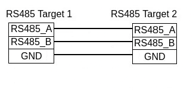

pdf格式的文档： 下载
PD25.1.0 NXP i.MX 8M Mini BSP手册 |
|
文档标题 |
PD25.1.0 NXP i.MX 8M Mini BSP手册 |
文档类型 |
BSP 手册 |
型号 |
PD25.1.0 NXP |
Yocto 手册 |
Scarthgap |
发布日期 |
2025/03/28 |
母文档 |
PD25.1.0 NXP i.MX 8M Mini BSP手册 |
下表显示了与本手册兼容的 BSP：
适用BSP |
BSP 发布类型 |
BSP 发布日期 |
BSP 状态 |
|---|---|---|---|
BSP-Yocto-NXP-i.MX8MM-PD25.1.0 |
大版本 |
2025/03/28 |
已发布 |
本手册指导您完成BSP包的安装、编译和烧写，并描述如何使用 phyCORE-i.MX8M Mini Kit 的硬件接口。本手册还包括如何从源码编译内核、u-boot镜像。本手册包含需要在PC(Linux操作系统)上执行的指令。
备注
This document contains code examples that describe the communication with the
board over the serial shell. The code examples lines begin with host:~$,
target:~$ or u-boot=>. This describes where the commands are to be
executed. Only after these keywords must the actual command be copied.
1. PHYTEC 文档
PHYTEC provides a variety of hardware and software documentation for all of its products. This includes any or all of the following:
- QS Guide
A short guide on how to set up and boot a phyCORE based board.
- Hardware Manual
A detailed description of the System-on-Module and accompanying carrierboard.
- Yocto Guide
A comprehensive guide for the Yocto version the phyCORE uses. This guide contains an overview of Yocto; introducing, installing, and customizing the PHYTEC BSP; how to work with programs like Poky and Bitbake; and much more.
- BSP 手册
A manual specific to the BSP version of the phyCORE. Information such as how to build the BSP, booting, updating software, device tree, and accessing peripherals can be found here.
- Development Environment Guide
This guide shows how to work with the Virtual Machine (VM) Host PHYTEC has developed and prepared to run various Development Environments. There are detailed step-by-step instructions for Eclipse and Qt Creator, which are included in the VM. There are instructions for running demo projects for these programs on a phyCORE product as well. Information on how to build a Linux host PC yourself is also a part of this guide.
- Pin Muxing Table
phyCORE SOMs have an accompanying pin table (in Excel format). This table will show the complete default signal path, from the processor to the carrier board. The default device tree muxing option will also be included. This gives a developer all the information needed in one location to make muxing changes and design options when developing a specialized carrier board or adapting a PHYTEC phyCORE SOM to an application.
除了这些标准手册和指南之外，PHYTEC 还将提供产品变更通知、应用说明和技术说明。这些文档将根据具体案例进行针对性提供。大部分文档都可以在我们产品的 https://www.phytec.de/produkte/system-on-modules/phycore-imx-8m-mini/nano/#downloads 中找到。
1.1. 支持的硬件
支持配备 i.MX 8M Mini SoC 或 i.MX 8M Nano SoC 的 phyBOARD-Polis。
在我们的网页上，您可以查看适用于BSP版本 BSP-Yocto-NXP-i.MX8MM-PD25.1.0 的所有Machine及其对应的Article Numbers(产品型号)： 网址. 如果您在该网页 Supported Machines 一节选择了特定的 Machine Name ，您可以查看被选中machine下的包含的 Article Number(产品型号) 以及简要的硬件描述。如果您只有 Article Number ，可以将 Machine Name 下拉菜单留空，仅选择您的 Article Number 。那么，它会显示您特定硬件所对应的 Machine Name
1.1.1. phyBOARD-Polis 器件
phyBOARD-Polis 器件（顶部） |
phyBOARD-Polis 器件（底部） |
{kind=link}
2. 开始使用
The phyCORE-i.MX8M Mini Kit is shipped with a pre-flashed SD card. It contains the phytec-qt6demo-image and can be used directly as a boot source. The e.MMC is programmed with only a U-Boot by default. You can get all sources from the BSP downloads page. This chapter explains how to flash a BSP image to SD card and how to start the board.
There are several ways to flash an image to SD card or even e.MMC. Most notably
using simple, sequential writing with the Linux command line tool dd. An
alternative way is to use PHYTEC's system initialization program called
partup, which makes it especially easy to
format more complex systems. You can get prebuilt Linux binaries of partup from its release page. Also read
partup's README for installation
instructions.
2.1. 下载镜像
The image contains all necessary files and makes sure partitions and any raw
data are correctly written. Both the partup package and the WIC image, which can
be flashed using dd, can be downloaded from our BSP downloads page.
Note that you can find different image versions and variants on our download server. The images are located on the server by folders per "BSP-Version", "Distro-Name" and "Machine-Name".
Example to download a partup package and a WIC image from the download server:
host:~$ wget https://download.phytec.de/Software/Linux/BSP-Yocto-i.MX8MM/BSP-Yocto-NXP-i.MX8MM-PD25.1.0/images/ampliphy-vendor/phyboard-polis-imx8mm-5/phytec-qt6demo-image-phyboard-polis-imx8mm-5.rootfs.partup
host:~$ wget https://download.phytec.de/Software/Linux/BSP-Yocto-i.MX8MM/BSP-Yocto-NXP-i.MX8MM-PD25.1.0/images/ampliphy-vendor/phyboard-polis-imx8mm-5/phytec-qt6demo-image-phyboard-polis-imx8mm-5.rootfs.wic.xz
备注
For e.MMC, more complex partitioning schemes or even just large images, we
recommend using the partup package, as it is faster in writing than dd
and allows for a more flexible configuration of the target flash device.
2.2. 将镜像写入SD卡
警告
要创建SD卡启动盘，必须要拥有Linux PC上的root权限。在选择烧写设备时请务必小心！所选设备上的所有文件将在命令执行后立即被擦除，而且擦除前不会有任何进一步的确认！
选择错误的设备可能会导致 数据丢失 ，例如，可能会擦除您当前所在PC上的系统！
2.2.1. 寻找正确的设备
要创建SD卡启动盘，首先要找到PC上您SD卡对应的正确设备名称。在开始将镜像复制到SD卡之前，请卸载任何已挂载的分区。
为了获取正确的设备名称，请移除您的SD卡并执行：
host:~$ lsblk现在插入你的SD卡，然后再次执行命令：
host:~$ lsblk比较两个输出，以获取第二个输出中的新设备名称。这些是SD卡的设备名称（如果SD卡已格式化，则包括设备名称和对应的分区）。
为了验证找到的设备名称的最终正确性，请执行命令
sudo dmesg。在其输出的最后几行中，您应该也能找到设备名称，例如/dev/sde或/dev/mmcblk0（具体取决于您的系统）。
或者，您可以使用图形化的程序，例如 GNOME Disks 或 KDE Partition Manager 来找到正确的设备。
现在您已经得到了正确的设备名称，例如 /dev/sde，如果SD卡曾格式化过，需要确认已取消其分区的挂载，您可以在输出中看到带有附加了数字的设备名称（例如 /dev/sde1），它们是SD卡的分区。一些Linux发行版系统在设备插入时会自动挂载分区。在写入之前，必须卸载这些分区，以避免数据损坏。
卸载所有这些分区，例如：
host:~$ sudo umount /dev/sde1
host:~$ sudo umount /dev/sde2
Now, the SD card is ready to be flashed with an image, using either partup,
dd or bmaptool.
2.2.2. Using bmaptool
One way to prepare an SD card is using
bmaptool. Yocto
automatically creates a block map file (<IMAGENAME>-<MACHINE>.wic.bmap) for
the WIC image that describes the image content and includes checksums for data
integrity. bmaptool is packaged by various Linux distributions. For
Debian-based systems install it by issuing:
host:~$ sudo apt install bmap-tools
通过以下命令将WIC镜像烧写到SD卡：
host:~$ bmaptool copy phytec-qt6demo-image-phyboard-polis-imx8mm-5?(.rootfs).wic?(.xz) /dev/<your_device>
将 <your_device> 替换为您之前找到的SD卡设备名称，并确保将文件 <IMAGENAME>-<MACHINE>.wic.bmap 与WIC镜像文件放在一起，以便bmaptool知道哪些块需要写入，哪些块需要跳过。
警告
bmaptool 仅擦写SD卡上镜像数据所在的区域。这意味着在写入新的镜像后，之前写入的旧U-Boot环境变量可能仍然可用。
2.2.3. 使用partup
使用partup烧写SD卡只需一个命令：
host:~$ sudo partup install phytec-qt6demo-image-phyboard-polis-imx8mm-5?(.rootfs).partup /dev/<your_device>
确保将 <your_device> 替换为您之前找到的设备名称。
关于partup的进一步使用说明，请参阅其 官方文档 。
警告
使用resize2fs版本1.46.6及更早版本的PC系统（例如Ubuntu 22.04）无法烧写在Mickledore以及更新的yocto版本上创建的partup软件包。这个是因为resize2fs新增了默认选项而导致的兼容性问题。有关详细信息，请参阅 release notes 。
备注
partup 具有清除eMMC user区域中特定区域的功能，我们提供的partup程序中用该功能擦除U-Boot环境变量。这是 bmaptool 工具所无法完成的一点，如前一部分所提到的。
partup相较于其他烧写工具的一个主要优势是，它可以配置MMC的特定部分，比如他可以直接写入eMMCboot分区，无需调用其他命令。
2.2.4. 使用 dd
在卸载所有SD卡的挂载分区后，您可以烧写SD卡。
一些PHYTEC BSP会生成未压缩的镜像（文件名扩展名为*.wic），而另一些则生成压缩的镜像（文件名扩展名为*.wic.xz）。
要写入未压缩的镜像（*.wic），请使用以下命令：
host:~$ sudo dd if=phytec-qt6demo-image-phyboard-polis-imx8mm-5?(.rootfs).wic of=/dev/<your_device> bs=1M conv=fsync status=progress
或者要写入压缩后的镜像（*.wic.xz），请使用以下命令：
host:~$ xzcat phytec-qt6demo-image-phyboard-polis-imx8mm-5?(.rootfs).wic.xz | sudo dd of=/dev/<your_device> bs=1M conv=fsync status=progress
再次确保将 <your_device> 替换为之前找到的设备名称。
参数 conv=fsync 强制在 dd 返回之前对设备进行sync操作。这确保所有数据块都已写入SD卡，而没有任何数据缓存在内存中。参数 status=progress 将打印出进度信息。
2.3. 首次启动
要从SD卡启动， bootmode switch (S1) 需要设置为以下位置：

插入SD卡
Connect the target and the host with micro USB on (X30) debug USB
给开发板通电
3. 编译BSP
本节将指导您使用Yocto和phyLinux脚本进行 i.MX 8M Mini BSP的编译。更多有关phytec meta-layer和Yocto的信息，请访问： Yocto Reference Manual (scarthgap) 。
3.1. 基本设置
如果您从未在您的主机上使用Yocto编译过Phytec BSP，您应查看 Yocto Reference Manual (scarthgap) 中的BSP Workspace安装一节。
3.2. 下载BSP
There are two ways to get the BSP sources. You can download the complete BSP sources from our BSP downloads page; or you can fetch and build it yourself with Yocto. This is particularly useful if you want to make customizations.
The phyLinux script is a basic management tool for PHYTEC Yocto BSP releases written in Python. It is mainly a helper to get started with the BSP sources structure.
创建一个新的项目文件夹，获取phyLinux脚本，并赋予脚本具备可执行权限：
host:~$ mkdir ~/yocto host:~$ cd yocto/ host:~/yocto$ wget https://download.phytec.de/Software/Linux/Yocto/Tools/phyLinux host:~/yocto$ chmod +x phyLinux
警告
我们需要一个空的项目文件夹，phyLinux首先会清理当前所在的工作目录。从一个不为空的目录下调用phyLinux将会产生告警。
运行phyLinux：
host:~/yocto$ ./phyLinux init
备注
在首次初始化时，phyLinux脚本会要求您在
/usr/local/bin目录中安装Repo工具。During the execution of the init command, you need to choose your processor platform (SoC), PHYTEC's BSP release number, and the hardware (MACHINE) you are working on.
备注
If you cannot identify your board with the information given in the selector, have a look at the invoice for the product. And have a look at the webpage of our BSP.
也可以通过命令行参数直接传递这些信息：
host:~/yocto$ DISTRO=ampliphy-vendor MACHINE=phyboard-polis-imx8mm-5 ./phyLinux init -p imx8mm -r BSP-Yocto-NXP-i.MX8MM-PD25.1.0
After the execution of the init command, phyLinux will print a few important notes. For example, it will print your git identity, SOC and BSP release which was selected as well as information for the next steps in the build process.
3.2.1. 开始构建
设置Shell环境变量：
host:~/yocto$ source sources/poky/oe-init-build-env
备注
在每次打开新的用于编译的shell时，都需要先执行这一步骤。
当前的工作目录会变更为 build/。
编译您的镜像：
host:~/yocto/build$ bitbake phytec-qt6demo-image
备注
对于第一次编译，我们建议从我们的较小的非图形化镜像phytec-headless-image开始，以查看一切是否正常工作。
host:~/yocto/build$ bitbake phytec-headless-image
第一次构建过程在现代的Intel Core i7处理器上大约需要40分钟。后续的构建将使用本次编译产生的缓存，大约需要3分钟。
3.2.2. BSP镜像
所有由Bitbake生成的镜像都放在 ~/yocto/build/deploy*/images/<machine> 。例如以下列表是 phyboard-polis-imx8mm-5 machine生成的所有文件：
u-boot.bin: 编译后的U-boot bootloader二进制文件。不是最终镜像中的bootloader！
oftree: 默认内核设备树
u-boot-spl.bin: 二级程序加载器 (SPL)
bl31-imx8mm.bin: ARM可信固件二进制文件
lpddr4_pmu_train_2d_dmem_202006.bin, lpddr4_pmu_train_2d_imem_202006.bin: DDR PHY固件镜像
imx-boot：由imx-mkimage编译的bootloader镜像，包括SPL、U-Boot、ARM可信固件和DDR固件。这是最终的可引导bootloader镜像。
fitImage: Linux内核FIT镜像
fitImage-its*.its: FIT镜像配置文件
Image: Linux内核镜像
Image.config: 内核config文件
imx8mm-phyboard-polis-rdk*.dtb：内核设备树文件
imx8mm-phy*.dtbo: 内核设备树overlay文件
phytec-qt6demo-image*.tar.gz: 根文件系统
phytec-qt6demo-image*.rootfs.wic.xz: SD卡镜像
4. 安装操作系统
4.1. 启动模式开关 (S1)
The phyBOARD-Polis features a boot switch with six individually switchable ports to select the phyCORE-i.MX 8M Mini default bootsource.
4.1.1. Mini

eMMC（核心板的默认启动方式） |

SPI NOR |

USB |
SD卡 |

UART1 RS485 |
UART1 RS232 |
4.2. Flash e.MMC
为了保持文档的一致性和简洁性，假设已经配置好了TFTP服务器；所有生成的镜像（如上所列）都被复制到默认的/srv/tftp目录。如果您没有进行设置，您需要修改路径到包含镜像的目录。有关如何设置TFTP服务器和目录的说明，请参见 Setup Network Host 。
To boot from e.MMC, make sure that the BSP image is flashed correctly to the e.MMC and the bootmode switch (S1) is set to e.MMC.
警告
When e.MMC and SD card are flashed with the same (identical) image, the UUIDs of the boot partitions are also identical. If the SD card is connected when booting, this leads to non-deterministic behavior as Linux mounts the boot partition based on UUID.
target:~$ blkid
可以运行上述命令来检查系统启动在这种条件下是否会到影响。如果 mmcblk2p1 和 mmcblk1p1 具有相同的UUID，则会影响系统正确启动。
4.2.1. Flash e.MMC from Network
i.MX 8M Mini boards have an Ethernet connector and can be updated over a network. Be
sure to set up the development host correctly. The IP needs to be set to
192.168.3.10, the netmask to 255.255.255.0, and a TFTP server needs to be
available. From a high-level point of view, an e.MMC device is like an SD card.
Therefore, it is possible to flash the WIC image (<name>.wic) from
the Yocto build system directly to the e.MMC. The image contains the
bootloader, kernel, device tree, device tree overlays, and root file system.
4.2.1.1. Flash e.MMC via Network in Linux on Host
It is also possible to install the OS at e.MMC from your Linux host. As before, you need a complete image on your host.
小技巧
需要保证设备和存储镜像的主机之间的网络正常！ Setup Network Host
查看主机上可用的镜像文件：
host:~$ ls /srv/tftp
phytec-qt6demo-image-phyboard-polis-imx8mm-5.rootfs.wic.xz
phytec-qt6demo-image-phyboard-polis-imx8mm-5.rootfs.wic.bmap
Send the image with the bmaptool command combined with ssh through the network
to the e.MMC of your device:
host:~$ scp /srv/tftp/phytec-qt6demo-image-phyboard-polis-imx8mm-5.rootfs.wic.* root@192.168.3.11:/tmp && ssh root@192.168.3.11 "bmaptool copy /tmp/phytec-qt6demo-image-phyboard-polis-imx8mm-5.rootfs.wic.xz /dev/mmcblk2"
4.2.1.2. Flash e.MMC via Network in Linux on Target
You can update the e.MMC from your target.
小技巧
需要保证设备和存储镜像的主机之间的网络正常！ Setup Network Host
Take a compressed or decompressed image with the accompanying block map file *.bmap on the host and send it with ssh through the network to the e.MMC of the target with a one-line command:
target:~$ scp <USER>@192.168.3.10:/srv/tftp/phytec-qt6demo-image-phyboard-polis-imx8mm-5.rootfs.wic.* /tmp && bmaptool copy /tmp/phytec-qt6demo-image-phyboard-polis-imx8mm-5.rootfs.wic.xz /dev/mmcblk2
4.2.1.3. Flash e.MMC from Network in U-Boot on Target
These steps will show how to update the e.MMC via a network.
小技巧
This step only works if the size of the image file is less than 1GB due to limited usage of RAM size in the Bootloader after enabling OP-TEE.
小技巧
需要保证设备和存储镜像的主机之间的网络正常！ Setup Network Host
解压缩您的镜像
host:~$ unxz /srv/tftp/phytec-headless-image-phyboard-polis-imx8mm-5.rootfs.wic.xz
通过网络将您的镜像加载到内存中：
使用DHCP
u-boot=> dhcp phytec-headless-image-phyboard-polis-imx8mm-5.rootfs.wic BOOTP broadcast 1 DHCP client bound to address 192.168.3.1 (1 ms) Using ethernet@30be0000 device TFTP from server 192.168.3.10; our IP address is 192.168.3.1 Filename 'phytec-headless-image-phyboard-polis-imx8mm-5.rootfs.wic'. Load address: 0x40480000 Loading: ###################################### ###################################### ###################################### ... ... ... ###################################### ############# 11.2 MiB/s done Bytes transferred = 911842304 (36599c00 hex)使用静态IP地址（必须先设置serverip和ipaddr）。
u-boot=> tftp ${loadaddr} phytec-headless-image-phyboard-polis-imx8mm-5.rootfs.wic Using ethernet@30be0000 device TFTP from server 192.168.3.10; our IP address is 192.168.3.11 Filename 'phytec-headless-image-phyboard-polis-imx8mm-5.rootfs.wic'. Load address: 0x40480000 Loading: ###################################### ###################################### ###################################### ... ... ... ###################################### ############# 11.2 MiB/s done Bytes transferred = 911842304 (36599c00 hex)
Write the image to the e.MMC:
u-boot=> mmc dev 2
switch to partitions #0, OK
mmc2(part 0) is current device
u-boot=> setexpr nblk ${filesize} / 0x200
u-boot=> mmc write ${loadaddr} 0x0 ${nblk}
MMC write: dev # 2, block # 0, count 1780942 ... 1780942 blocks written: OK
4.2.2. Flash e.MMC U-Boot image via Network from running U-Boot
Update the standalone U-Boot image imx-boot is also possible from U-Boot. This can be used if the bootloader on e.MMC is located in the e.MMC user area.
小技巧
需要保证设备和存储镜像的主机之间的网络正常！ Setup Network Host
Load image over tftp into RAM and then write it to e.MMC:
u-boot=> tftp ${loadaddr} imx-boot
u-boot=> setexpr nblk ${filesize} / 0x200
u-boot=> mmc dev 2
u-boot=> mmc write ${loadaddr} 0x42 ${nblk}
提示
十六进制值表示偏移量，单位为512字节块的倍数。请参阅 偏移表 以获取相应SoC的正确值。
4.2.3. Flash e.MMC from USB stick
4.2.3.1. Flash e.MMC from USB in Linux
These steps will show how to flash the e.MMC on Linux with a USB stick. You only need a complete image saved on the USB stick and a bootable WIC image. (e.g. phytec-qt6demo-image-phyboard-polis-imx8mm-5.|yocto-imageext|). Set the bootmode switch (S1) to SD card.
插入并挂载U盘：
[ 60.458908] usb-storage 1-1.1:1.0: USB Mass Storage device detected [ 60.467286] scsi host0: usb-storage 1-1.1:1.0 [ 61.504607] scsi 0:0:0:0: Direct-Access 8.07 PQ: 0 ANSI: 2 [ 61.515283] sd 0:0:0:0: [sda] 3782656 512-byte logical blocks: (1.94 GB/1.80 GiB) [ 61.523285] sd 0:0:0:0: [sda] Write Protect is off [ 61.528509] sd 0:0:0:0: [sda] No Caching mode page found [ 61.533889] sd 0:0:0:0: [sda] Assuming drive cache: write through [ 61.665969] sda: sda1 [ 61.672284] sd 0:0:0:0: [sda] Attached SCSI removable disk target:~$ mount /dev/sda1 /mnt
现在查看您在USB优盘上保存的镜像文件：
target:~$ ls /mnt phytec-qt6demo-image-phyboard-polis-imx8mm-5.rootfs.wic.xz phytec-qt6demo-image-phyboard-polis-imx8mm-5.rootfs.wic.bmap
Write the image to the phyCORE-i.MX 8M Mini e.MMC (MMC device 2 without partition):
target:~$ bmaptool copy /mnt/phytec-qt6demo-image-phyboard-polis-imx8mm-5.rootfs.wic.xz /dev/mmcblk2
After a complete write, your board can boot from e.MMC.
小技巧
在此之前，您需要将 bootmode switch (S1) 配置为 eMMC。
4.2.3.2. Flash e.MMC from USB stick in U-Boot on Target
小技巧
此步骤仅在镜像文件小于1GB的情况下会被执行成功，因为在启用OPTEE后，Bootloader中可用的RAM大小有限，不足以加载超过1GB的镜像
These steps will show how to update the e.MMC via a USB device. Configure the bootmode switch (S1) to SD card and insert an SD card. Power on the board and stop in U-Boot prompt. Insert a USB device with the copied uncompressed WIC image to the USB slot.
将镜像从USB设备加载到RAM中：
u-boot=> usb start
starting USB...
USB0: USB EHCI 1.00
scanning bus 0 for devices... 2 USB Device(s) found
scanning usb for storage devices... 1 Storage Device(s) found
u-boot=> fatload usb 0:1 0x58000000 phytec-headless-image-phyboard-polis-imx8mm-5.rootfs.wic
497444864 bytes read in 31577 ms (15 MiB/s)
Write the image to the e.MMC:
u-boot=> mmc dev 2
switch to partitions #0, OK
mmc2(part 0) is current device
u-boot=> setexpr nblk ${filesize} / 0x200
u-boot=> mmc write 0x58000000 0x0 ${nblk}
MMC write: dev # 2, block # 0, count 1024000 ... 1024000 blocks written: OK
u-boot=> boot
4.2.4. Flash e.MMC from SD card
Even if there is no network available, you can update the e.MMC. For that, you
only need a ready-to-use image file (*.wic) located on the SD card.
Because the image file is quite large, you need to allocate more SD card space.
To create a new partition or enlarge your SD card, see Resizing ext4 Root Filesystem.
或者，使用partup包烧写SD卡，如 Getting Started 中所述。这样就可使用SD卡的全部容量。
4.2.4.1. Flash e.MMC from SD card in Linux on Target
You can also flash the e.MMC on Linux. You only need a partup package or WIC image saved on the SD card.
检查在SD卡上保存的partup包或WIC镜像文件：
target:~$ ls phytec-qt6demo-image-phyboard-polis-imx8mm-5.rootfs.partup phytec-qt6demo-image-phyboard-polis-imx8mm-5.rootfs.wic.xz phytec-qt6demo-image-phyboard-polis-imx8mm-5.rootfs.wic.bmap
Write the image to the phyCORE-i.MX 8M Mini e.MMC (MMC device 2 without partition) using partup:
target:~$ partup install phytec-qt6demo-image-phyboard-polis-imx8mm-5.rootfs.partup /dev/mmcblk2
Flashing the partup package has the advantage of using the full capacity of the e.MMC device, adjusting partitions accordingly.
备注
另外，也可以使用
bmaptool工具：target:~$ bmaptool copy phytec-qt6demo-image-phyboard-polis-imx8mm-5.rootfs.wic.xz /dev/mmcblk2
请注意，在使用
bmaptool烧写时，根文件系统分区并不会使用eMMC的最大容量。After a complete write, your board can boot from e.MMC.
警告
Before this will work, you need to configure the bootmode switch (S1) to e.MMC.
4.2.4.2. Flash e.MMC from SD card in U-Boot on Target
小技巧
This step only works if the size of the image file is less than 1GB due to limited usage of RAM size in the Bootloader after enabling OPTEE. If the image file is too large use the Updating e.MMC from SD card in Linux on Target subsection.
将一个可用的镜像烧写到SD卡，并创建一个EXT4格式的第三分区。将WIC镜像（例如 phytec-qt6demo-image.rootfs.wic）复制到该分区。
Configure the bootmode switch (S1) to SD card and insert the SD card.
打开电源并进入U-Boot。
加载镜像：
u-boot=> ext4load mmc 1:3 ${loadaddr} phytec-headless-image-phyboard-polis-imx8mm-5.rootfs.wic reading 911842304 bytes read in 39253 ms (22.2 MiB/s)Switch the mmc dev to e.MMC:
u-boot=> mmc list FSL_SDHC: 1 (SD) FSL_SDHC: 2 (eMMC) u-boot=> mmc dev 2 switch to partitions #0, OK mmc2(part 0) is current device
Flash your WIC image (for example phytec-qt6demo-image.rootfs.wic) from the SD card to e.MMC. This will partition the card and copy imx-boot, Image, dtb, dtbo, and root file system to e.MMC.
u-boot=> setexpr nblk ${filesize} / 0x200 u-boot=> mmc write ${loadaddr} 0x0 ${nblk} MMC write: dev # 2, block # 0, count 1780942 ... 1780942 blocks written: OKPower off the board and change the bootmode switch (S1) to e.MMC.
4.3. 烧写 SPI NOR Flash
The phyCORE-i.MX 8M Minis are optionally equipped with SPI NOR Flash. To boot from SPI Flash, set bootmode switch (S1) to SPI NOR. The SPI Flash is usually quite small. The phyCORE-i.MX8M Mini Kit only has 32MB SPI NOR flash populated. Only the bootloader and the environment can be stored. The kernel, device tree, and file system are taken from e.MMC by default.
SPI NOR Flash分区表在U-Boot环境变量中定义。可以通过以下命令打印：
u-boot=> printenv mtdparts
mtdparts=30bb0000.spi:3840k(u-boot),128k(env),128k(env:redund),-(none)
4.3.1. 通过网络烧写SPI NOR Flash
The SPI NOR can contain the bootloader and environment to boot from. The arm64 kernel can not decompress itself, the image size extends the SPI NOR flash populated on the phyCORE-i.MX 8M Mini.
小技巧
需要保证设备和存储镜像的主机之间的网络正常！ Setup Network Host
4.3.1.1. 在开发板linux环境中通过网络烧写SPI NOR Flash
将镜像从主机复制到开发板：
host:~$ scp imx-boot-phyboard-polis-imx8mm-5-fspi.bin-flash_evk_flexspi root@192.168.3.11:/root
查找要擦除的U-boot分区的块数：
target:~$ mtdinfo /dev/mtd0 mtd0 Name: u-boot Type: nor Eraseblock size: 65536 bytes, 64.0 KiB Amount of eraseblocks: 60 (3932160 bytes, 3.7 MiB) Minimum input/output unit size: 1 byte Sub-page size: 1 byte Character device major/minor: 90:0 Bad blocks are allowed: false Device is writable: true
擦除U-Boot分区并烧写：
target:~$ flash_erase /dev/mtd0 0x0 60 target:~$ flashcp imx-boot-phyboard-polis-imx8mm-5-fspi.bin-flash_evk_flexspi /dev/mtd0
4.3.1.2. 在开发板的U-Boot环境中通过网络烧写SPI NOR
Similar to updating the e.MMC over a network, be sure to set up the development host correctly. The IP needs to be set to 192.168.3.10, the netmask to 255.255.255.0, and a TFTP server needs to be available. Before reading and writing is possible, the SPI NOR flash needs to be probed:
u-boot=> sf probe
SF: Detected mt25qu512a with page size 256 Bytes, erase size 64 KiB, total 64 MiB
SPI NOR Flash需要使用特殊格式的U-Boot镜像。确保您使用了正确的镜像文件。通过tftp加载镜像，然后将bootloader写入Flash：
u-boot=> tftp ${loadaddr} imx-boot-phyboard-polis-imx8mm-5-fspi.bin-flash_evk_flexspi u-boot=> sf update ${loadaddr} 0 ${filesize} device 0 offset 0x0, size 0x1c0b20 1641248 bytes written, 196608 bytes skipped in 4.768s, speed 394459 B/s同时需要擦除环境分区。这样，环境变量可以在从SPI NOR Flash启动后写入：
u-boot=> sf erase 0x400000 0x100000
4.3.2. Flash SPI NOR Flash from SD card
The bootloader on SPI NOR flash can be also flashed with SD card.
4.3.2.1. Flash SPI NOR from SD card in kernel on Target
Copy the SPI NOR flash U-boot image imx-boot-phyboard-polis-imx8mm-5-fspi.bin-flash_evk_flexspi to the first partition on the SD card.
Mount the SD card:
target:~$ mount /dev/mmcblk1p1 /mnt
查找要擦除的U-Boot分区的块数：
target:~$ mtdinfo /dev/mtd0 mtd0 Name: u-boot Type: nor Eraseblock size: 65536 bytes, 64.0 KiB Amount of eraseblocks: 60 (3932160 bytes, 3.7 MiB) Minimum input/output unit size: 1 byte Sub-page size: 1 byte Character device major/minor: 90:0 Bad blocks are allowed: false Device is writable: true
擦除u-boot分区并烧写：
target:~$ flash_erase /dev/mtd0 0x0 60 target:~$ flashcp /mnt/imx-boot-phyboard-polis-imx8mm-5-fspi.bin-flash_evk_flexspi /dev/mtd0
4.3.2.2. Flash SPI NOR from SD card in U-Boot on Target
Copy the SPI NOR flash U-boot image imx-boot-phyboard-polis-imx8mm-5-fspi.bin-flash_evk_flexspi to the first partition on the SD card.
在进行读写操作之前，需要对SPI-NOR Flash进行枚举：
u-boot=> sf probe SF: Detected n25q256ax1 with page size 256 Bytes, erase size 64 KiB, total 32 MiB
A specially formatted U-boot image for the SPI NOR flash is used. Ensure you use the correct image file. Load the image from the SD card, erase and write the bootloader to the flash:
u-boot=> mmc dev 1 u-boot=> fatload mmc 1:1 ${loadaddr} imx-boot-phyboard-polis-imx8mm-5-fspi.bin-flash_evk_flexspi u-boot=> sf update ${loadaddr} 0 ${filesize}同时需要擦除环境分区。这样，环境变量可以在从SPI NOR Flash启动后写入：
u-boot=> sf erase 0x400000 0x100000
4.4. RAUC
BSP支持RAUC（Robust Auto-Update Controller）。它管理设备固件更新的过程。这包括更新Linux内核、设备树和根文件系统。PHYTEC已撰写了一份在线手册，介绍如何在我们的BSP中集成RAUC： L-1006e.A6 RAUC Update & Device Management Manual 。
4.5. EFI 启动
U-boot也支持通过efi启动核心板。U-boot会默认先搜寻一个启动脚本，然后使用该脚本启动Ampliphy发行版。如果未搜索出该启动脚本，将会启动efi例程。所以，通过efi启动前，需要确认您并没有安装我们的发行版。
4.5.1. 关闭efi启动
要关闭efi启动，需要将 doefiboot 变量设置为0.并且确认您没有在 bootmeths 环境变量中定义 efi 或者 efi_mgr
u-boot=> setenv doefiboot 0
u-boot=> env save; env save;
4.5.2. 切换efi启动模式
如果您想要通过efi启动，可以设置 bootmeths 环境变量到efi。同时将 doefiboot 环境变量值配置为1。
u-boot=> setenv bootmeths efi
u-boot=> env save; env save;
4.5.3. 安装操作系统
使用efi可以安装、启动不同的linux发行版，如openSUSE, Fedora以及Debian。首先你需要从它们的官方网站下载iso镜像，如：
https://cdimage.debian.org/debian-cd/current/arm64/iso-dvd/
然后复制.iso文件到比如U盘。请确认输入了正确的设备名：
sudo dd if=file.iso of=/dev/sdx bs=1M conv=fsync status=progress
将U盘插入板并启动。GRUB会用菜单提示接下来做什么。这里选择安装。然后按照向导操作。这个过程很直接，不同的发行版可能有些区别。你可以将发行版安装在emmc (mmc 2) 或sd卡 (mmc 1)。 确保在安装时不要覆盖u-boot。最好是和uboot选择不同的存储器件，否则需要手工分区。 自动分区会从硬盘的头部开始分区， 为了避免覆盖u-boot， 使用从硬盘头部4MiB的偏移量后的区域。
在安装Debian时会被问，你是否想要强制安装GRUB到EFI可移动存储路径。 选择不。 当被问倒你是否要更新NVRAM变量，也选择不。 否则grub-dummy安装步骤会失败，并且会退回倒 "强制GRUB安装" 提示界面。
在安装完成后，重新启动设备并移除安装介质（U盘）。设备会启动刚刚安装的发行版系统。
如果启动失败，请检查启动选项是否设置了该发行版。最简单的方法是使用 eficonfig 命令。
u-boot=> eficonfig
这将打开一个菜单。然后你可以选择 Edit Boot Option 。它会显示当前的启动选项。如果这是空的或者找不到你的发行版，选择 Add Boot Option 以添加一个新的选项。例如对于debian，你只需要设置描述和文件。你可以随意输入描述字段中的内容。当你选择文件字段时，可以选择安装发行版的磁盘和第一个分区。例如eMMC "mmc 2:1" ，或SD卡 "mmc 1:1" 。你需要选择的文件位于 EFI/debian/grubaa64.efi 。之后保存，退出并重置板子。板子应该会启动进入debian。
5. 开发
从这个版本开始，U-Boot中的启动行为发生了变化。之前，内核和设备树是作为单独的二进制文件提供的。现在，二者将被包含在一个单一的FIT镜像二进制文件中。此外，PHYTEC ampliphy发行版的启动逻辑被移到了一个启动脚本中，该脚本是以FIT镜像二进制文件的一部分存在。要恢复到旧的启动方式，您可以执行
u-boot=> run legacyboot
备注
这种启动方式已被弃用，并将在下一个版本中移除。默认情况下，通过此命令启动将返回错误，因为启动分区中缺少内核和设备树。
5.1. 独立编译准备
In this section, we describe how to build the U-Boot and the Linux kernel without using the Yocto Project. This procedure makes the most sense for development. The U-Boot source code, the Linux kernel, and all other git repositories are available on GitHub.
5.1.1. Git 仓库
使用的 U-Boot 仓库：
git://git.phytec.de/u-boot-imx
我们的U-Boot基于 u-boot-imx 并添加了一些硬件相关的补丁。
使用的 Linux 内核仓库：
https://github.com/phytec/linux-phytec-imx
我们的 i.MX 8M Mini 内核是基于 linux-phytec-imx 内核。
要找出核心板应使用的u-boot和kernel版本对应的git仓库tag标签，请查看您的BSP源文件夹：
meta-phytec/recipes-kernel/linux/linux-phytec-imx_*.bb meta-phytec/recipes-bsp/u-boot/u-boot-imx_*.bb
5.1.2. 获取SDK
You can download the SDK from the SDK downloads page, or build it yourself with Yocto:
移动到Yocto的build目录：
host:~$ source sources/poky/oe-init-build-env host:~$ bitbake -c populate_sdk phytec-qt6demo-image # or another image
在成功编译后，SDK安装包保存在 build/deploy*/sdk。
5.1.3. 安装SDK
设置正确的权限并安装SDK：
host:~$ chmod +x phytec-ampliphy-vendor-glibc-x86_64-phytec-qt6demo-image-cortexa53-crypto-toolchain-5.0.8.sh host:~$ ./phytec-ampliphy-vendor-glibc-x86_64-phytec-qt6demo-image-cortexa53-crypto-toolchain-5.0.8.sh ============================================================================================================ Enter target directory for SDK (default: /opt/ampliphy-vendor/5.0.8): You are about to install the SDK to "/opt/ampliphy-vendor/5.0.8". Proceed [Y/n]? Y Extracting SDK...done Setting it up...done SDK has been successfully set up and is ready to be used.
5.1.4. 使用SDK
通过在工具链目录中source environment-setup 文件来初始化您的 shell 交叉编译环境：
host:~$ source /opt/ampliphy-vendor/5.0.8/environment-setup-cortexa53-crypto-phytec-linux
5.1.5. 安装所需工具
独立编译Linux kernel和U-Boot需要主机安装一些额外的工具。对于Ubuntu，您可以使用以下命令安装它们：
host:~$ sudo apt install bison flex libssl-dev
警告
在较旧的主机发行版（例如，Ubuntu 20.04 LTS）上使用Scarthgap NXP基础的BSP时，构建用于主机的U-Boot或Linux内核工具可能会出现问题。如果遇到 "undefined reference" 错误，一种解决方法是在PATH环境变量中添加主机的binutils。
host$ export PATH=/usr/bin:$PATH
在加载SDK environment-setup 后，运行此命令。
请注意，在较新版本的发行版（如Ubuntu 22.04）中未观察到SDK相关问题，这些发行版似乎无需任何修改即可正常工作。
5.2. 单独编译U-Boot
5.2.1. 获取源代码
获取U-Boot源代码：
host:~$ git clone git://git.phytec.de/u-boot-imx
要获取正确的 U-Boot tag，您需要查看我们的release notes，可以在这里找到：release notes
此版本中使用的 tag 称为 v2024.04-2.2.0-phy10
查看所需的 U-Boot tag：
host:~$ cd ~/u-boot-imx/ host:~/u-boot-imx$ git fetch --all --tags host:~/u-boot-imx$ git checkout tags/v2024.04-2.2.0-phy10
设置编译环境：
host:~/u-boot-imx$ source /opt/ampliphy-vendor/5.0.8/environment-setup-cortexa53-crypto-phytec-linux
5.2.2. 获取所需的二进制文件
要编译bootloader，您需要将这些文件复制到您的 u-boot-imx 编译目录，并将其重命名以适应 mkimage 脚本：
ARM Trusted firmware 二进制文件 （ mkimage 工具 兼容格式 bl31.bin ）：bl31-imx8mm.bin
OPTEE 镜像 (可选的)：tee.bin
DDR firmware files ( mkimage 工具 兼容格式 lpddr4_[i,d]mem_*d_*.bin ): lpddr4_dmem_1d_*.bin, lpddr4_dmem_2d_*.bin, lpddr4_imem_1d_*.bin, lpddr4_imem_2d_*.bin
如果您已经使用Yocto编译了我们的BSP，您可以在yocto工程目录中获取 bl31-imx8mm.bin、tee.bin和lpddr4_*.bin：BSP Images
警告
确保您重命名所需的文件，以和 mkimage tool 兼容。
5.2.3. 编译bootloader
编译 flash.bin (imx-boot):
host:~/u-boot-imx$ make phycore-imx8mm_defconfig host:~/u-boot-imx$ make flash.bin
5.2.4. 将bootloader烧写到块设备上
flash.bin 文件可以在 u-boot-imx/ 目录下找到，现在可以进行烧写。需要指定芯片特定的偏移量：
SoC |
User分区偏移量 |
Boot分区偏移量 |
e.MMC Device |
|---|---|---|---|
i.MX 8M Mini |
33 kiB |
33 kiB |
/dev/mmcblk2 |
例如，烧写SD卡：
host:~/u-boot-imx$ sudo dd if=flash.bin of=/dev/sd[x] bs=1024 seek=33 conv=fsync
提示
如果您有我们的BSP Yocto工程代码，具体的偏移值也会在Yocto变量"BOOTLOADER_SEEK"和"BOOTLOADER_SEEK_EMMC"中声明。
5.2.5. 使用固定内存大小编译U-Boot
如果您的系统因为EEPROM中的硬件信息损坏或丢失而无法启动，您可以创建一个具有固定RAM大小的flash.bin。但您仍应联系我们支持部门以烧写正确的EEPROM数据。
按照步骤获取U-boot源代码，并切换到 Build U-Boot 章节说明的分支。
编辑文件 configs/phycore-imx8mm_defconfig:
CONFIG_TARGET_PHYCORE_IMX8MM=y
CONFIG_PHYCORE_IMX8MM_RAM_SIZE_FIX=y
# CONFIG_PHYCORE_IMX8MM_RAM_SIZE_1GB=y
# CONFIG_PHYCORE_IMX8MM_RAM_SIZE_2GB=y
# CONFIG_PHYCORE_IMX8MM_RAM_SIZE_4GB=y
选择正确的RAM大小，确保与核心板上的贴装的器件一致，取消注释该RAM大小的行。保存更改后，按照 Build U-Boot 章节的剩余步骤进行操作。
5.3. 单独编译内核
内核与设备树一起打包在FIT镜像中。U-Boot已被配置为能够加载FIT镜像并引导其中包含的内核。因此，内核镜像必须打包在FIT镜像中。
5.3.1. 配置源代码
使用的 linux-phytec-imx 分支可以在 release notes 中找到
此版本所需的标签称为 v6.6.52-2.2.0-phy9
Check out 所需的 linux-phytec-imx 标签：
host:~$ git clone https://github.com/phytec/linux-phytec-imx host:~$ cd ~/linux-phytec-imx/ host:~/linux-phytec-imx$ git fetch --all --tags host:~/linux-phytec-imx$ git checkout tags/v6.6.52-2.2.0-phy9
为了提交更改，强烈建议切换到一个新分支：
host:~/linux-phytec-imx$ git switch --create <new-branch>
设置编译环境：
host:~/linux-phytec-imx$ source /opt/ampliphy-vendor/5.0.8/environment-setup-cortexa53-crypto-phytec-linux
5.3.2. 编译内核
编译Linux内核：
host:~/linux-phytec-imx$ make imx8_phytec_defconfig host:~/linux-phytec-imx$ make -j$(nproc)
安装内核模块，比如安装到 NFS 目录：
host:~/linux-phytec-imx$ make INSTALL_MOD_PATH=/home/<user>/<rootfspath> modules_install
镜像可以在 ~/linux-phytec-imx/arch/arm64/boot/Image.gz 找到
dtb文件可以在 ~/linux-phytec-imx/arch/arm64/boot/dts/freescale/imx8mm-phyboard-polis-rdk.dtb 找到
要（重新）编译设备树和 -overlay 文件，只需运行
host:~/linux-phytec-imx$ make dtbs
or, to build a specific dtb (e.g. imx8mm-phyboard-polis-rdk.dtb):
host:~/linux-phytec-imx$ make freescale/imx8mm-phyboard-polis-rdk.dtb
备注
如果您遇到以下编译问题：
scripts/dtc/yamltree.c:9:10: fatal error: yaml.h: No such file or directory
确保您在主机系统上安装了 "libyaml-dev" 包：
host:~$ sudo apt install libyaml-dev
5.3.3. 将内核打包成FIT镜像
要简单地替换内核，您需要一个 image tree source (.its)文件。如果您已经使用Yocto编译了我们的BSP，可以从此处提到的目录获取its文件： BSP Images 或者您可以在这里下载该文件： https://download.phytec.de/Software/Linux/BSP-Yocto-i.MX8MM/BSP-Yocto-NXP-i.MX8MM-PD25.1.0/images/ampliphy-vendor/phyboard-polis-imx8mm-5/
将 .its 文件复制到当前工作目录，创建一个指向内核镜像的链接，并使用 mkimage 创建最终的 fitImage。
host:~/linux-phytec-imx$ cp /path/to/yocto/deploydir/fitimage-its*.its .
&& ln -s arch/arm64/boot/Image.gz linux.bin
&& mkimage -f fitImage-its*.its fitImage
5.3.4. Copy FIT image and kernel modules to SD card
FIT镜像以及内核module可以用以下方式复制到已挂载的SD卡上。
host:~/linux-phytec-imx$ cp fitImage /path/to/sdcard/boot/
host:~/linux-phytec-imx$ make INSTALL_MOD_PATH=/path/to/sdcard/root/ modules_install
5.4. Working with UUU
The Universal Update Utility (UUU) by NXP is software to execute on the host for loading and running the bootloader on the board through SDP (Serial Download Protocol). For detailed information visit https://github.com/nxp-imx/mfgtools or download the Official UUU-tool documentation.
5.4.1. Host preparations for UUU Usage
请按照 https://github.com/nxp-imx/mfgtools#linux 上的说明进行操作。
如果您要从源代码编译UUU，请将其添加到
PATH中：This BASH command adds uuu only temporarily to
PATH. To add it permanently, add this line to~/.bashrc.export PATH=~/mfgtools/uuu/:"$PATH"设置udev规则（在
uuu -udev中有详细说明）：host:~$ sudo sh -c "uuu -udev >> /etc/udev/rules.d/70-uuu.rules" host:~$ sudo udevadm control --reload
5.4.2. 获取镜像
Download imx-boot from our server or get it from your Yocto build directory at build/deploy-ampliphy-vendor/images/phyboard-polis-imx8mm-5/. For flashing a wic image to e.MMC, you will also need phytec-qt6demo-image-phyboard-polis-imx8mm-5.rootfs.wic.
5.4.3. 开发板准备
将 bootmode switch (S1) 设置为 USB串行下载。同时，将 USB 端口 X2 连接到主机。
5.4.4. 通过UUU工具启动bootloader
执行并给开发板上电：
host:~$ sudo uuu -b spl imx-boot
您可以像往常一样通过 (X30) 在终端上查看启动日志。
备注
The default boot command when booting with UUU is set to fastboot. If you
want to change this, please adjust the environment variable bootcmd_mfg in
U-Boot prompt with setenv bootcmd_mfg. Please note, when booting with UUU the
default environment is loaded. saveenv has no effect. If you want to
change the boot command permanently for uuu-boot, you need to change this in
U-Boot code.
5.4.5. Flashing U-boot Image to e.MMC via UUU
警告
UUU flashes U-boot into e.MMC BOOT (hardware) boot partitions, and it sets the BOOT_PARTITION_ENABLE in the e.MMC! This is a problem since we want the bootloader to reside in the e.MMC USER partition. Flashing next U-Boot version .wic image and not disabling BOOT_PARTITION_ENABLE bit will result in device always using U-boot saved in BOOT partitions. To fix this in U-Boot:
u-boot=> mmc partconf 2 0 0 0
u-boot=> mmc partconf 2
EXT_CSD[179], PARTITION_CONFIG:
BOOT_ACK: 0x0
BOOT_PARTITION_ENABLE: 0x0
PARTITION_ACCESS: 0x0
or check Disable booting from e.MMC boot partitions from Linux.
This way the bootloader is still flashed to e.MMC BOOT partitions but it is not used!
When using partup tool and .partup package for e.MMC flashing this is
done by default, which makes partup again superior flash option.
执行并给开发板上电：
host:~$ sudo uuu -b emmc imx-boot
5.4.6. Flashing wic Image to e.MMC via UUU
执行并给开发板上电：
host:~$ sudo uuu -b emmc_all imx-boot phytec-qt6demo-image-phyboard-polis-imx8mm-5.rootfs.wic
5.4.7. Flashing SPI NOR Flash via UUU
执行并给开发板上电：
host:~$ sudo uuu -b qspi imx-boot-phyboard-polis-imx8mm-5-fspi.bin-flash_evk_flexspi
这将更新SPI NOR Flash上的U-Boot，但不会更新环境。您可能需要擦除旧环境，以便加载新U-Boot的默认环境：
u-boot=> env erase
u-boot=> reset
5.5. 主机网络准备
为了在bootloader中执行涉及网络的各种任务，需要配置一些主机服务。在开发主机上，必须安装和配置TFTP、NFS和DHCP服务。启动以太网所需的工具如下：
host:~$ sudo apt install tftpd-hpa nfs-kernel-server kea
5.5.1. TFTP服务设置
首先，创建一个目录来存储TFTP文件：
host:~$ sudo mkdir /srv/tftp
然后将您的BSP镜像文件复制到此目录，并确保other用户也对tftp目录中的所有文件具有读取权限，否则将无法从开发板访问这些文件。
host:~$ sudo chmod -R o+r /srv/tftp
您还需要为相应的接口配置一个静态IP地址。PHYTEC开发板的默认IP地址是192.168.3.11。可以将主机地址设置为192.168.3.10，子网掩码为255.255.255.0
host:~$ ip addr show <network-interface>
将 <network-interface> 替换为连接到开发板的网络接口。您可以通过不指定网络接口来显示所有可选网络接口。
返回的结果应包含以下内容：
inet 192.168.3.10/24 brd 192.168.3.255
创建或编辑
/etc/default/tftpd-hpa文件：# /etc/default/tftpd-hpa TFTP_USERNAME="tftp" TFTP_DIRECTORY="/srv/tftp" TFTP_ADDRESS=":69" TFTP_OPTIONS="-s -c"
将 TFTP_DIRECTORY 设置为您的 TFTP 服务器根目录
将TFTP_ADDRESS设置为TFTP服务监听的主机地址（设置为0.0.0.0:69以监听69端口上所有IP）。
设置 TFTP_OPTIONS，以下命令显示可配置的选项：
host:~$ man tftpd
重新启动服务以应用配置更改：
host:~$ sudo service tftpd-hpa restart
现在将开发板的以太网端口连接到您的主机。我们还需要在开发板和运行TFTP服务的主机之间建立网络连接。TFTP服务器的IP地址应设置为192.168.3.10，子网掩码为255.255.255.0。
5.5.1.1. NFS服务器设置
创建一个NFS目录：
host:~$ sudo mkdir /srv/nfs
Temporarily export the nfs directory: The NFS server is not restricted to a certain file system location, so all we have to do is to export our root file system to the embedded network. In this example, the whole directory is exported and the "lab network" address of the development host is 192.168.3.10. The IP address has to be adapted to the local needs:
host:~$ sudo exportfs -i -o rw,no_root_squash,sync,no_subtree_check 192.168.3.0/255.255.255.0:/srv/nfs
unexport the rootfs when finished:
host:~$ sudo exportfs -u 192.168.3.0/255.255.255.0:/srv/nfs
5.5.1.1.1. Permanent export
To make the export persistent across reboots on most distributions, modify the
/etc/exportsfile and export it:/srv/nfs 192.168.3.0/255.255.255.0(rw,no_root_squash,sync,no_subtree_check)
现在NFS服务器需要再次读取
/etc/exportfs文件：host:~$ sudo exportfs -ra
5.5.1.2. DHCP服务器设置
创建或编辑
/etc/kea/kea-dhcp4.conf文件；以内部子网为例，将 <network-interface> 替换为物理网络接口的名称：{ "Dhcp4": { "interfaces-config": { "interfaces": [ "<network-interface>/192.168.3.10" ] }, "lease-database": { "type": "memfile", "persist": true, "name": "/tmp/dhcp4.leases" }, "valid-lifetime": 28800, "subnet4": [{ "id": 1, "next-server": "192.168.3.10", "subnet": "192.168.3.0/24", "pools": [ { "pool": "192.168.3.1 - 192.168.3.255" } ] }] } }
警告
在创建子网时请小心，因为这可能会扰乱公司网络政策。为了安全起见，请使用不同的子网，并通过 interfaces 配置选项指定该网络。
现在DHCP服务需要重新读取
/etc/kea/kea-dhcp4.conf文件：host:~$ sudo systemctl restart kea-dhcp4-server
当您启动/重启主机时，如果kea-dhcp4配置中指定的网络接口未处于活动状态，kea-dhcp4-server将无法启动。因此请确保在连接接口后启动或者重启该systemd服务。
备注
DHCP server setup is only needed when using dynamic IP addresses. For our vendor BSPs, static IP addresses are used by default.
u-boot=> env print ip_dyn
ip_dyn=no
To use dynamic IP addresses for netboot, ip_dyn needs to be set to yes.
警告
Using netboot with standard boot and static IPs does not work yet in this release. Standardboot will always use dhcp.
5.6. 从网络启动内核
从网络启动意味着通过TFTP加载内核和设备树，并通过NFS加载根文件系统。但bootloader需要从另外的的启动设备加载。
5.6.1. 在主机上放置网络启动的镜像
将内核fitimage复制到您的tftp目录中：
host:~$ cp fitImage /srv/tftp
将启动脚本复制到您的tftp目录中：
host:~$ cp boot.scr.uimg /srv/tftp/
确保other用户对tftp目录中的所有文件具有读取权限，否则将无法从开发板访问它们：
host:~$ sudo chmod -R o+r /srv/tftp
将根文件系统解压到您的NFS目录中：
host:~$ sudo tar -xvzf phytec-qt6demo-image-phyboard-polis-imx8mm-5.rootfs.tar.gz -C /srv/nfs
备注
请确保使用sudo执行命令，以保留根文件系统中文件的所属权限。
5.6.2. 设置网络启动的bootenv.txt文件
在您的tftp目录中创建一个bootenv.txt文件，并将以下变量写入其中。
nfsroot=/srv/nfs
overlays=<overlayconfignames>
<overlayconfignames> has to be replaced with the devicetree overlay config names that you want to use. Separate the config names by hash symbols. For example:
overlays=conf-example-overlay1.dtbo#conf-example-overlay2.dtbo
5.6.3. 开发板上的网络设置
如果要自定义开发板上的以太网配置，请按照此处的说明进行操作： Network Environment Customization
5.6.4. 从开发板启动
将开发板启动到U-boot，按任意键暂停。
要从网络启动，请运行：
u-boot=> setenv boot_targets ethernet u-boot=> bootflow scan -lb
To persistently boot from network, save the environment after setting boot_targets to ethernet.
u-boot=> env set boot_targets "ethernet" u-boot=> env save
To use DHCP for booting from a network:
u-boot=> env set ip_dyn true u-boot=> env save
When not using DHCP (ip_dyn set to false), U-Boot needs ipaddr and serverip to be set. If addresses different from the PHYTEC provided defaults are desired, they can be set in the U-Boot environment:
u-boot=> env set ipaddr <xxx.xxx.xxx.xxx> u-boot=> env set serverip <xxx.xxx.xxx.xxx> u-boot=> env save
5.7. 获取BSP开发中版本
5.7.1. 当前release的开发中版本
这些release manifest文件是为了让您访问 Yocto BSP的开发版本。它们不会在phyLinux选择菜单中显示，需要手动选择。可以使用以下命令行来完成此操作：
host:~$ ./phyLinux init -p imx8mm -r BSP-Yocto-NXP-i.MX8MM-PD25.1.y
这将初始化一个BSP，用于跟踪当前版本（ BSP-Yocto-NXP-i.MX8MM-PD25.1.0 ）的最新开发版本。从现在开始，在此文件夹中执行 repo sync 将从我们的Git仓库中拉取所有最新的更改：
host:~$ repo sync
5.7.2. 即将发布版本的开发中版本
即将发布版本的开发中版本可以通过这种方式访问。请执行以下命令，并查找一个比最新版本（ BSP-Yocto-NXP-i.MX8MM-PD25.1.0 ）的PDXX.Y数字更高的版本，并且以 .y 结尾：
host:~$ ./phyLinux init -p imx8mm
5.8. 获取最新的Upstream支持
我们有一个使用Yocto主分支（不是NXP发布的）的manifest，他使用upstream的Linux和U-Boot。这可以用来测试最新的upstream kernel/U-Boot。
备注
master分支的manifest反映了最新的开发状态。有时会出现一些bug。我们会定期修复master分支。
host:~$ ./phyLinux init -p imx8mm -r BSP-Yocto-Ampliphy-i.MX8MM-master
5.9. Format SD card
使用单一的SD卡启动盘对存储介质进行烧写是开发过程中的常见任务。本章节针对此场景提供基础说明。大多数镜像的大小超过了默认的root分区剩余容量。要使用SD卡进行烧写，根文件系统需要扩展或创建一个单独的分区。有几种不同的方法可以格式化SD卡。最简单的方法是使用Gparted。
5.9.1. Gparted
获取 GParted：
host:~$ sudo apt install gparted
Insert the SD card into your host and get the device name:
host:~$ dmesg | tail ... [30436.175412] sd 4:0:0:0: [sdb] 62453760 512-byte logical blocks: (32.0 GB/29.8 GiB) [30436.179846] sdb: sdb1 sdb2 ...
Unmount all SD card partitions.
启动 GParted：
host:~$ sudo gparted

5.9.1.1. 扩展根文件系统
警告
使用resize2fs版本1.46.6及更早版本的PC系统（例如Ubuntu 22.04）无法烧写在Mickledore以及更新的yocto版本上创建的partup软件包。这个是因为resize2fs新增了默认选项而导致的兼容性问题。有关详细信息，请参阅 发布说明 。
Choose your SD card device at the drop-down menu on the top right
选择 ext4 根分区并点击调整大小：


您可以根据需要拖动滑块或手动输入大小。

通过点击“Change Size”按钮确认您的输入。

要应用您的更改，请按绿色勾号。
现在您可以挂载根分区并将 phytec-qt6demo-image-phyboard-polis-imx8mm-5.wic 镜像复制到其中。然后再卸载它：
host:~$ sudo cp phytec-qt6demo-image-phyboard-polis-imx8mm-5.wic /mnt/ ; sync host:~$ umount /mnt
5.9.1.2. 创建第三个分区
Choose your SD card device at the drop-down menu on the top right
选择更大的未分配区域，然后点击"New"：

点击"Add"

按绿色勾确认更改。

现在您可以挂载新的分区并将 phytec-qt6demo-image-phyboard-polis-imx8mm-5.wic 镜像复制到其中。然后卸载它：
host:~$ sudo mount /dev/sde3 /mnt host:~$ sudo cp phytec-qt6demo-image-phyboard-polis-imx8mm-5.wic /mnt/ ; sync host:~$ umount /mnt
5.10. 切换旧启动模式
警告
As we switched to standard boot with fitimage as default, legacyboot is deprecated. We kept the option to switch back to legacyboot for this release, but it will be removed in the future.
5.10.1. Yocto中的更改
默认情况下，fitImage和启动脚本将被部署到wic.xz镜像中。要切换回旧启动模式，您需要用内核镜像和设备树替换fitImage和启动脚本。它们在Yocto构建的deploy文件夹中，因此您可以手动将其复制到设备的引导分区上。或者，您可以在Yocto中进行以下更改，以再次在镜像中部署内核和设备树。
首先创建变量 KERNEL_DEVICETREE_DEPLOY 。例如，可以在构建目录conf/local.conf中的local.conf文件中进行此操作。该变量是meta-phytec在 conf/machine/phyboard-polis-imx8mm-5.conf 中设置的 KERNEL_DEVICETREE 变量的副本，但需要删除开头的 freescale ，仅保留设备树文件名。最终应类似于以下内容：
KERNEL_DEVICETREE_DEPLOY = " \
imx8mp-phyboard-pollux-rdk.dtb \
imx8mp-phyboard-pollux-isp-csi1.dtbo \
imx8mp-phyboard-pollux-isp-csi2.dtbo \
imx8mp-phyboard-pollux-isi-csi1.dtbo \
imx8mp-phyboard-pollux-isi-csi2.dtbo \
imx8mp-phyboard-pollux-peb-av-10.dtbo \
imx8mp-phyboard-pollux-peb-wlbt-05.dtbo \
imx8mp-phyboard-pollux-vm016-csi1.dtbo \
imx8mp-phyboard-pollux-vm016-csi1-fpdlink-port0.dtbo \
imx8mp-phyboard-pollux-vm016-csi1-fpdlink-port1.dtbo \
imx8mp-phyboard-pollux-vm016-csi2.dtbo \
imx8mp-phyboard-pollux-vm016-csi2-fpdlink-port0.dtbo \
imx8mp-phyboard-pollux-vm016-csi2-fpdlink-port1.dtbo \
imx8mp-phyboard-pollux-vm017-csi1.dtbo \
imx8mp-phyboard-pollux-vm017-csi1-fpdlink-port0.dtbo \
imx8mp-phyboard-pollux-vm017-csi1-fpdlink-port1.dtbo \
imx8mp-phyboard-pollux-vm017-csi2.dtbo \
imx8mp-phyboard-pollux-vm017-csi2-fpdlink-port0.dtbo \
imx8mp-phyboard-pollux-vm017-csi2-fpdlink-port1.dtbo \
imx8mp-phyboard-pollux-vm020-csi1.dtbo \
imx8mp-phyboard-pollux-vm020-csi1-fpdlink-port0.dtbo \
imx8mp-phyboard-pollux-vm020-csi1-fpdlink-port1.dtbo \
imx8mp-phyboard-pollux-vm020-csi2.dtbo \
imx8mp-phyboard-pollux-vm020-csi2-fpdlink-port0.dtbo \
imx8mp-phyboard-pollux-vm020-csi2-fpdlink-port1.dtbo \
imx8mp-phycore-no-eth.dtbo \
imx8mp-phycore-no-rtc.dtbo \
imx8mp-phycore-no-spiflash.dtbo \
imx8mp-phycore-rpmsg.dtbo \
"
然后加入这一行：
IMAGE_BOOT_FILES:mx8m-nxp-bsp:append = " Image oftree ${KERNEL_DEVICETREE_DEPLOY}"
备注
需要clean来让改动生效
bitbake -c cleanall phytec-qt6demo-image
开始构建：
host:~$ bitbake phytec-qt6demo-image
5.10.2. U-Boot环境变量修改
通过设置以下变量重新使能旧启动模式：
uboot=> setenv dolegacyboot 1
uboot=> env save; env save;
uboot=> boot
6. 设备树 (DT)
6.1. 介绍
以下文本简要描述了设备树，关于设备树的相关文档可以在Linux kernel文档中找到（https://docs.kernel.org/devicetree/usage-model.html）。
“Open Firmware Device Tree”或简称设备树（DT）是一种用于描述硬件的数据结构和语言。更具体地说，它是一个可由操作系统读取的硬件描述，以便操作系统不需要对machine的细节进行硬编码
内核文档是学习设备树的一个非常好的资源。关于设备树数据格式的概述可以在 devicetree.org 的设备树使用页面找到。
6.2. PHYTEC i.MX 8M Mini BSP设备树概念
以下部分说明了PHYTEC配置基于 i.MX 8M Mini 的核心板设备树的一些规则。
6.2.1. 设备树结构
Module.dtsi - 文件包括所有安装在核心板上的设备，例如PMIC和RAM。
Board.dts - 包含核心板 dtsi 文件。从SoC i.MX 8M Mini 引出并在底板使用的设备也包含在此 dts 中。
Overlay.dtso - 根据核心板或底板上可选硬件（例如 SPI 闪存或 PEB-AV-10）的情况来启用/禁用一些功能。
在Linux内核的根目录下，我们的 i.MX 8 平台的设备树文件可以在 arch/arm64/boot/dts/freescale/ 找到。
6.2.2. 设备树Overlay
设备树Overlay是可以在启动时合并到设备树中的设备树片段。下面是扩展板的硬件描述。对比源码中的include，overlay通过覆盖的方式来生效。overlay也可以根据实际开发板的硬件配置来设置设备树节点状态。设备树Overlay与我们Linux内核仓库中的其他设备树文件一起放在子文件夹 arch/arm64/boot/dts/freescale/ 中。
phyboard-polis-imx8mm-5.conf 可用的overlay文件有：
imx8mm-phyboard-polis-peb-av-10.dtbo
imx8mm-phyboard-polis-peb-eval-01.dtbo
imx8mm-phyboard-polis-vm016.dtbo
imx8mm-phyboard-polis-vm016-fpdlink-port0.dtbo
imx8mm-phyboard-polis-vm016-fpdlink-port1.dtbo
imx8mm-phyboard-polis-vm017.dtbo
imx8mm-phyboard-polis-vm017-fpdlink-port0.dtbo
imx8mm-phyboard-polis-vm017-fpdlink-port1.dtbo
imx8mm-phyboard-polis-vm020.dtbo
imx8mm-phyboard-polis-vm020-fpdlink-port0.dtbo
imx8mm-phyboard-polis-vm020-fpdlink-port1.dtbo
imx8mm-phycore-no-eth.dtbo
imx8mm-phycore-no-spiflash.dtbo
imx8mm-phycore-rpmsg.dtbo
可以在linux中使用以下命令来列出FIT镜像中所有的overlay配置
host:~$ dumpimage -l /boot/fitImage
或者在u-boot：
u-boot=> load mmc ${mmcdev}:1 ${loadaddr} fitImage
u-boot=> iminfo
可以在Linux或U-Boot环境下配置overlay。overlay是在引导命令调用后、内核加载之前生效。接下来的部分将更详细地解释配置方法。
6.2.2.1. 设置 ${overlays} 变量
${overlays} U-Boot 环境变量包含一个以井号#分隔的overlay文件列表，这些overlay文件将在启动过程中应用。overlays变量中的overlay列表会包含在FIT镜像中。在 $KERNEL_DEVICETREE 这个 Yocto machine 变量中设置的 overlay 文件将自动添加到FIT镜像中。
${overlays} 变量可以直接在U-Boot环境中设置，也可以作为外部 bootenv.txt 环境文件的一部分。当希望使用在U-Boot环境中手工配置的overlay变量，可以配置 env set no_bootenv 1 ，因为overlay变量可能在运行启动脚本时被覆盖。默认情况下， ${overlays} 变量来自位于启动分区的 bootenv.txt 文件。您可以在已启动的开发板上从Linux读取和写入该文件：
target:~$ cat /boot/bootenv.txt
overlays=conf-imx8mm-phyboard-polis-rdk-peb-eval-01.dtbo#conf-imx8mm-phyboard-polis-peb-av-10.dtbo
更改将在下次重启后生效。如果没有可用的 bootenv.txt 文件，可以直接在U-Boot环境中设置overlay变量。
u-boot=> setenv overlays conf-imx8mm-phyboard-polis-peb-av-10.dtbo
u-boot=> printenv overlays
overlays=conf-imx8mm-phyboard-polis-peb-av-10.dtbo
u-boot=> boot
如果用户定义了 ${overlays} 变量，同时存在 bootenv.txt 文件，则需要设置 ${no_bootenv} 变量：
u-boot=> setenv no_bootenv 1
u-boot=> setenv overlays conf-imx8mm-phyboard-polis-peb-av-10.dtbo
u-boot=> boot
有关环境的更多信息，请参见 U-boot External Environment subsection of the device tree overlay section。
我们使用 ${overlays} 变量来描述在运行时无法自动检测的扩展板和摄像头。如果想禁用 ${overlays} 变量中列出的overlay，可以在U-Boot的环境中将overlay变量unset，并且将 ${no_overlays} 变量设置为 1。
u-boot=> env delete overlays
u-boot=> env set no_bootenv 1
如果希望通过 bootenv.txt 文件设置除overlay之外的 U-Boot 变量并且禁用overlay，可以从 bootenv.txt 文件中删除overlay定义行，而不是设置 no_bootenv。
6.2.2.2. 不同的SoM配置
核心板会自动加载额外的overlay，以禁用核心板未贴装的组件。通过读取出厂EEPROM数据（EEPROM SoM Detection）来实现自动加载对应的overlay。
核心板型号会决定是否应用设备树overlay。要在U-Boot环境中查询是否会应用某个overlay，请运行：
u-boot=> env print fit_extensions
如果没有可用的EEPROM数据，则不加载任何设备树overlay。
要禁止启动时自动加载不同核心板的overlay，可以在bootloader环境中将 ${no_extensions} 变量设置为 1 ：
u-boot=> setenv no_extensions 1
u-boot=> boot
6.2.3. U-boot外部环境
在Linux内核启动时，外部环境 bootenv.txt 文本文件将从MMC设备的boot分区或通过TFTP加载。该文件的主要目的是存储 ${overlays} 变量。这可以针对不同的machine在Yocto中预定义不同的overlay配置。文件的内容在meta-phytec中的Yocto recipe中的bootenv中定义： https://git.phytec.de/meta-phytec/tree/recipes-bsp/bootenv?h=scarthgap
该文件中也可以设置其他变量。这些变量将覆盖环境中现有的设置。但只有对boot命令后进行计算的变量生效，例如 ${nfsroot} 或 ${mmcargs}。在文件中更改其他变量将不会有作用。以网络启动的用法作为示例。
如果无法加载外部环境，启动过程将继续进行，并使用自带的环境变量值。
6.2.4. 在Linux环境下更改开发板上的U-boot环境变量
Libubootenv是我们镜像中包含的一个工具，用于在开发板linux上修改U-Boot环境。
使用以下命令打印U-Boot环境：
target:~$ fw_printenv
使用以下命令修改U-Boot环境：
target:~$ fw_setenv <variable> <value>
小心
Libubootenv会读取配置文件中配置的环境变量。要修改的环境变量会被插入到该文件中，默认情况下使用eMMC中存储环境变量。
如果eMMC没有被烧写过或者eMMC环境被擦除，libubootenv将无法工作。您应该修改 /etc/fw_env.config 文件，以匹配您想要使用的环境源。
7. 访问外设
To find out which boards and modules are supported by the release of PHYTEC's phyCORE-i.MX 8M Mini BSP described herein, visit our BSP web page and click the corresponding BSP release in the download section. Here you can find all hardware supported in the columns "Hardware Article Number" and the correct machine name in the corresponding cell under "Machine Name".
为了最大化软件的可复用性，Linux内核提供了一个巧妙的软件架构，软件会根据不同硬件组件来分层。BSP（板级支持包）尽可能地对套件的功能进行模块化。当定制开发板或自定义核心板时，大部分软件配置可以简单的复制粘贴。与具体的开发板相关的内核代码可以在内核代码仓库中的设备树（DT）中找到，路径为 arch/arm64/boot/dts/freescale/*.dts 。
实际上，软件复用是Linux内核最重要的特性之一，尤其是在ARM架构中，它必须应对大量复杂且不同的系统级芯片（SoC）。整个开发板的硬件在设备树（DT）中描述，独立于内核镜像。硬件描述在一个单独的二进制文件中，称为设备树二进制文件（Device Tree Blob，DTB）（参见 device tree）。
请阅读PHYTEC i.MX 8M Mini BSP设备树概念部分，以了解我们的 i.MX 8 BSP设备树模型。
以下部分概述了 i.MX 8 平台上支持的硬件组件及其对应操作系统驱动程序。客户可以根据自身的需求进行更改。
7.1. i.MX 8M Mini 引脚复用
该 i.MX 8M Mini Soc包含许多外设接口。为了在保持最大功能性的同时减少封装尺寸和降低整体系统成本，许多 i.MX 8M Mini 引脚可以多路复用为多达八种信号功能。尽管存在许多可能的引脚多路复用组合，但由于时序限制，只有一定数量的组合被称为有效的 IO 集合。这些有效的 IO 集合经过精心挑选，以为用户提供尽可能多的应用场景。
请参考我们的硬件手册或NXP i.MX 8M Mini 参考手册，以获取有关特定引脚和复用能力的更多信息。
IO 集合的配置，也称为复用（muxing），是在设备树中完成的。驱动程序pinctrl-single读取设备树的节点fsl,pins，并进行引脚复用配置。
以下是 imx8mm-phyboard-polis-rdk.dts中UART1设备的引脚复用示例：
pinctrl_uart1: uart1grp {
fsl,pins = <
MX8MM_IOMUXC_SAI2_RXFS_UART1_DCE_TX 0x00
MX8MM_IOMUXC_SAI2_RXC_UART1_DCE_RX 0x00
MX8MM_IOMUXC_SAI2_RXD0_UART1_DCE_RTS_B 0x00
MX8MM_IOMUXC_SAI2_TXFS_UART1_DCE_CTS_B 0x00
>;
};
字符串的第一部分 MX8MM_IOMUXC_SAI2_RXFS_UART1_DCE_TX 指定了引脚（在这个例子中是 SAI2_RXFS）。字符串的第二部分（UART1_DCE_RX）是该引脚当前的复用选项。引脚设置值（右侧的十六进制值）定义了引脚的不同模式，例如，内部上拉电阻是否被激活。在当前配置中，内部电阻是禁用的。
7.2. RS232/RS485
i.MX 8M Mini SoC 提供最多 4 个 UART 单元。PHYTEC 开发板支持不同数量 UART 单元。UART1 也可以用作 RS-485。为此，需要正确设置 bootmode switch (S1)：
|
UART1 RS485 |
UART1 RS232 |
7.2.1. RS232
以人类可读的格式显示终端的当前设置：
target:~$ stty -a
UART接口的配置可以通过stty命令完成。例如：
target:~$ stty -F /dev/ttymxc0 115200 crtscts raw -echo
通过简单的echo和cat，可以测试基本的通信。示例：
target:~$ echo 123 > /dev/ttymxc0
host:~$ cat /dev/ttyUSB2
主机应打印出 "123"。
7.2.2. RS485
提示
在使用较长电缆时，请记得在总线两端各使用120欧姆的终端电阻。
为了方便测试，请查看linux-serial-test。这个工具会通过调用RS485的IOCTL，发送恒定的数据流。
target:~$ linux-serial-test -p /dev/ttymxc0 -b 115200 --rs485 0
有关linux-serial-test工具及其参数的更多信息，请访问此链接：linux-serial-test
linux-serial-test会自动设置ioctl，也可以通过rs485conf手动设置。
你可以用以下命令显示当前配置：
target:~$ rs485conf /dev/ttymxc0
您可以通过以下方式列出帮助选项：
target:~$ rs485conf /dev/ttymxc0 -h
Linux kernel文档描述了如何在C代码中调用IOCTL： https://www.kernel.org/doc/Documentation/serial/serial-rs485.txt
7.2.2.1. RS485 半双工
对于半双工模式，应按下图方式连接：
硬件手册中有描述各个引脚的功能。
对于半双工模式，您可以手动设置 ioctls，如下所示：
target:~$ rs485conf /dev/ttymxc0 -e 1 -r 0
target:~$ rs485conf /dev/ttymxc0
= Current configuration:
RS485 enabled: true
RTS on send: high
RTS after send: low
RTS delay before send: 0
RTS delay after send: 0
Receive during sending data: false
Bus termination enabled: false
然后您可以测试发送和接收是否正常工作，方法如下：
target1:~$ cat /dev/ttymxc0
target2:~$ echo test > /dev/ttymxc0
您应该会在target1上看到 "test" 打印出来。您也可以切换角色，在target2上发送并在target1上接收。
或者，您还可以使用 linux-serial-test 工具进行测试：
target1:~$ linux-serial-test -s -e -f -p /dev/ttymxc0 -b 115200 --rs485 0 -t -i 8
...
/dev/ttymxc0: count for this session: rx=57330, tx=0, rx err=0
target2:~$ linux-serial-test -s -e -f -p /dev/ttymxc0 -b 115200 --rs485 0 -r -o 5
...
/dev/ttymxc0: count for this session: rx=0, tx=57330, rx err=0
在此示例中，target1将是接收器，target2将是发射器。您还可以切换角色。请记住，先启动接收方，然后再启动发射方。接收方将接收8秒，发射方将在5秒内发送。接收方需要比发射器发送的时间稍长一些。程序结束时会打印最终的 "count for this session" 。在那里，您可以检查所有发送的帧是否都被接收到。
所有测试都是target到target，但也可以使用 USB 到 RS485 转换器进行主机到目标的测试。您可能需要调整接口。
The device tree representation for RS232 and RS485: https://github.com/phytec/linux-phytec-imx/blob/v6.6.52-2.2.0-phy9/arch/arm64/boot/dts/freescale/imx8mm-phyboard-polis-rdk.dts#L297
7.3. Ethernet
phyBOARD-Polis-i.MX 8M Mini 提供一个千兆以太网接口。
所有接口都提供一个标准的Linux网络端口，可以使用BSD套接字接口进行编程。整个网络配置由systemd-networkd守护进程管理。相关的配置文件可以在开发板的 /lib/systemd/network/ 目录中找到，以及在BSP中的 meta-ampliphy/recipes-core/systemd/systemd-conf 目录中。
IP addresses can be configured within *.network files. The interfaces are configured to static IP as default. The default IP address and netmask for eth0 is:
eth0: 192.168.3.11/24
To configure eth0 to dynamic IP over DHCP, go to
/lib/systemd/network/\*-eth0.network
and delete the line:
Address=192.168.3.11/24
The DT Ethernet setup might be split into two files depending on your hardware configuration: the module DT and the board-specific DT. The device tree set up for the ethernet where the PHY is populated on the SoM can be found here: https://github.com/phytec/linux-phytec-imx/blob/v6.6.52-2.2.0-phy9/arch/arm64/boot/dts/freescale/imx8mm-phycore-som.dtsi#L50.
7.3.1. 网络配置
7.3.1.1. U-boot网络环境
要在bootloader中查找以太网设置：
u-boot=> printenv ipaddr serverip netmask
在将主机设置为IP 192.168.3.10和子网掩码255.255.255.0的情况下，开发板应该返回：
u-boot=> printenv ipaddr serverip netmask ipaddr=192.168.3.11 serverip=192.168.3.10 netmask=255.225.255.0
如果您需要进行任何更改：
u-boot=> setenv <parameter> <value>
<parameter> 应该是 ipaddr、netmask、gatewayip 或 serverip 中的一个。<value> 将是所选参数的设定值。
您所做的更改目前是临时的。要保存这些更改：
u-boot=> saveenv
在这里，您也可以将IP地址更改为DHCP，而不是使用静态IP地址。
配置：
u-boot=> setenv ip dhcp
设置 TFTP 和 NFS 的路径。修改可以如下所示：
u-boot=> setenv nfsroot /home/user/nfssrc
请注意，这些修改只会影响bootloader的设置。
小技巧
像nfsroot和netargs这样的变量可以被U-boot外部环境重新赋值。对于网络启动，外部环境将通过tftp加载。例如，要在 bootenv.txt 文件中设置nfsroot变量，请在tftproot目录修改：
nfsroot=/home/user/nfssrc
无需在开发板上存储这些信息。请注意，U-boot外部环境对于像 ipaddr 或 serveraddr 这样的变量不起作用，因为它们在加载外部环境之前已经被设置完成。
7.3.1.2. 内核网络环境
Find the ethernet settings for eth0 in the target kernel:
target:~$ ip -statistics address show eth0 2: eth0: <NO-CARRIER,BROADCAST,MULTICAST,UP> mtu 1500 qdisc mq state UP group default qlen 1000 link/ether 50:2d:f4:19:d6:33 brd ff:ff:ff:ff:ff:ff RX: bytes packets errors dropped missed mcast 0 0 0 0 0 0 TX: bytes packets errors dropped carrier collsns 0 0 0 0 0 0
Temporary adaption of the eth0 configuration:
target:~$ ip address add 192.168.3.11/24 dev eth0
7.4. WLAN/Bluetooth
为了支持WLAN和蓝牙，我们使用来自LSR的Sterling-LWB模块。该模块支持2.4 GHz，并且可以在多种模式下运行，如客户端模式、使用WEP、WPA、WPA2加密的接入点（AP）模式等。有关该模块的更多信息，请访问 https://connectivity-staging.s3.us-east-2.amazonaws.com/2019-09/CS-DS-SterlingLWB%20v7_2.pdf
7.4.1. 连接到WLAN网络
首先设置您所在国家的正确监管域：
target:~$ iw reg set DE
target:~$ iw reg get
你将会看到：
country DE: DFS-ETSI
(2400 - 2483 @ 40), (N/A, 20), (N/A)
(5150 - 5250 @ 80), (N/A, 20), (N/A), NO-OUTDOOR
(5250 - 5350 @ 80), (N/A, 20), (0 ms), NO-OUTDOOR, DFS
(5470 - 5725 @ 160), (N/A, 26), (0 ms), DFS
(57000 - 66000 @ 2160), (N/A, 40), (N/A)
设置无线接口：
target:~$ ip link
target:~$ ip link set up dev wlan0
现在您可以扫描可用的网络：
target:~$ iw wlan0 scan | grep SSID
您可以使用一个跨平台的客户端，名为wpa_supplicant，支持WEP、WPA和WPA2，以建立加密连接。
为此，请将网络凭据添加到文件 /etc/wpa_supplicant.conf 中：
country=DE
network={
ssid="<SSID>"
proto=WPA2
psk="<KEY>"
}
现在可以建立连接：
target:~$ wpa_supplicant -D nl80211 -c /etc/wpa_supplicant.conf -i wlan0 -B
这会得到如下输出：
Successfully initialized wpa_supplicant
ip地址自动通过DHCP配置。有关其他可能的IP配置，请参阅 Yocto Reference Manual (scarthgap) 中的“更改网络配置”部分。
7.4.2. 蓝牙
Bluetooth is connected to UART2 interface. The Bluetooth device needs to be set up manually:
target:~$ hciconfig hci0 up
target:~$ hciconfig -a
hci0: Type: Primary Bus: UART
BD Address: 00:25:CA:2F:39:96 ACL MTU: 1021:8 SCO MTU: 64:1
UP RUNNING PSCAN
RX bytes:1392 acl:0 sco:0 events:76 errors:0
TX bytes:1198 acl:0 sco:0 commands:76 errors:0
...
现在您可以扫描环境中的可见蓝牙设备。在默认配置下，蓝牙是不可见的。
target:~$ hcitool scan
Scanning ...
XX:XX:XX:XX:XX:XX <SSID>
7.4.3. 可见性
要激活可见性：
target:~$ hciconfig hci0 piscan
要禁用可见性：
target:~$ hciconfig hci0 noscan
7.4.4. 连接
target:~$ bluetoothctl
[bluetooth]# discoverable on
Changing discoverable on succeeded
[bluetooth]# pairable on
Changing pairable on succeeded
[bluetooth]# agent on
Agent registered
[bluetooth]# default-agent
Default agent request successful
[bluetooth]# scan on
[NEW] Device XX:XX:XX:XX:XX:XX <name>
[bluetooth]# connect XX:XX:XX:XX:XX:XX
备注
如果连接失败并出现错误信息： "Failed to connect: org.bluez.Error.Failed"，请尝试使用以下命令重新启动PulseAudio：
target:~$ pulseaudio --start
7.5. SD card
The i.MX 8M Mini supports a slot for Secure Digital cards to be used as general-purpose block devices. These devices can be used in the same way as any other block device.
警告
这些设备是热插拔的。然而，您必须确保在设备仍然挂载时不要拔掉它。这可能会导致数据丢失！
After inserting an SD card, the kernel will generate new device nodes in /dev. The full device can be reached via its /dev/mmcblk1 device node. SD card partitions will show up as:
/dev/mmcblk1p<Y>
<Y> 作为分区编号，从1开始计数，直到该设备的最大分区数量。分区可以使用任何类型的文件系统进行格式化，并且可以以标准方式进行处理，例如，可以使用mount 和 umount 命令进行分区挂载和卸载。
小技巧
这些分区设备节点要求SD卡包含有效的分区表（类似于“硬盘”）。如果没有分区表，则整个设备作为一个文件系统使用（类似于“软盘”）。在这种情况下，必须使用 /dev/mmcblk1 进行格式化和挂载。卡始终以可写方式挂载。
DT configuration for the MMC (SD card slot) interface can be found here: https://github.com/phytec/linux-phytec-imx/blob/v6.6.52-2.2.0-phy9/arch/arm64/boot/dts/freescale/imx8mm-phyboard-polis-rdk.dts#L381
DT configuration for the eMMC interface can be found here: https://github.com/phytec/linux-phytec-imx/blob/v6.6.52-2.2.0-phy9/arch/arm64/boot/dts/freescale/imx8mm-phycore-som.dtsi#L293
7.6. e.MMC Devices
PHYTEC modules like phyCORE-i.MX 8M Mini are populated with an e.MMC memory chip as the main storage. e.MMC devices contain raw Multi-Level Cells (MLC) or Triple-Level Cells (TLC) combined with a memory controller that handles ECC and wear leveling. They are connected via an SD/MMC interface to the i.MX 8M Mini and are represented as block devices in the Linux kernel like SD cards, flash drives, or hard disks.
The electric and protocol specifications are provided by JEDEC (https://www.jedec.org/standards-documents/technology-focus-areas/flash-memory-ssds-ufs-emmc/e-mmc). The e.MMC manufacturer's datasheet is relatively short and meant to be read together with the supported version of the JEDEC e.MMC standard.
PHYTEC currently utilizes the e.MMC chips with JEDEC Version 5.0 and 5.1
7.6.1. 扩展CSD寄存器
e.MMC devices have an extensive amount of extra information and settings that are available via the Extended CSD registers. For a detailed list of the registers, see manufacturer datasheets and the JEDEC standard.
在Linux用户空间中，您可以查询寄存器：
target:~$ mmc extcsd read /dev/mmcblk2
你将会看到：
=============================================
Extended CSD rev 1.7 (MMC 5.0)
=============================================
Card Supported Command sets [S_CMD_SET: 0x01]
[...]
7.6.2. 使能后台操作 (BKOPS)
In contrast to raw NAND Flash, an e.MMC device contains a Flash Transfer Layer (FTL) that handles the wear leveling, block management, and ECC of the raw MLC or TLC. This requires some maintenance tasks (for example erasing unused blocks) that are performed regularly. These tasks are called Background Operations (BKOPS).
默认情况下（取决于芯片），后台操作可能会定期执行，也可能不会，他影响读写的最大延迟时间。
The JEDEC Standard has specified a method since version v4.41 that the host can issue BKOPS manually. See the JEDEC Standard chapter Background Operations and the description of registers BKOPS_EN (Reg: 163) and BKOPS_START (Reg: 164) in the e.MMC datasheet for more details.
寄存器 BKOPS_EN（寄存器：163）的位 MANUAL_EN（位 0）的含义：
值 0：主机不支持手动触发 BKOPS。设备写入性能会受到影响。
值1：主机支持手动触发BKOPS。当主机不进行设备读写时，它会不时触发BKOPS。
The mechanism to issue background operations has been implemented in the Linux kernel since v3.7. You only have to enable BKOPS_EN on the e.MMC device (see below for details).
JEDEC标准v5.1引入了一种新的自动BKOPS功能。它使主机能够定期触发后台操作，因为设备在空闲时会自动启动BKOPS（请参见寄存器BKOPS_EN（寄存器：163）中位AUTO_EN的描述）。
要检查 BKOPS_EN 是否已设置，请执行：
target:~$ mmc extcsd read /dev/mmcblk2 | grep BKOPS_EN
输出将会是，例如：
Enable background operations handshake [BKOPS_EN]: 0x01 #OR Enable background operations handshake [BKOPS_EN]: 0x00
值0x00表示BKOPS_EN被禁用，设备的写入性能受到影响。值0x01表示BKOPS_EN被启用，主机将不时发起后台操作。
通过以下命令使能BKOPS_EN：
target:~$ target:~$ mmc --help [...] mmc bkops_en <auto|manual> <device> Enable the eMMC BKOPS feature on <device>. The auto (AUTO_EN) setting is only supported on eMMC 5.0 or newer. Setting auto won't have any effect if manual is set. NOTE! Setting manual (MANUAL_EN) is one-time programmable (unreversible) change.
要设置BKOPS_EN位，请执行：
target:~$ mmc bkops_en manual /dev/mmcblk2
为了确保新设置生效并且内核能够自动触发BKOPS，请先关闭系统：
target:~$ poweroff
小技巧
BKOPS_EN位是一次性可编程的，无法恢复。
7.6.3. 可靠写入
有两种不同的可靠写入选项：
Reliable Write option for a whole e.MMC device/partition.
单次写的可靠写入方式。
小技巧
Do not confuse e.MMC partitions with partitions of a DOS, MBR, or GPT partition table (see the previous section).
The first Reliable Write option is mostly already enabled on the e.MMCs mounted on the phyCORE-i.MX 8M Mini SoMs. To check this on the running target:
target:~$ mmc extcsd read /dev/mmcblk2 | grep -A 5 WR_REL_SET
Write reliability setting register [WR_REL_SET]: 0x1f
user area: the device protects existing data if a power failure occurs during a write o
peration
partition 1: the device protects existing data if a power failure occurs during a write
operation
partition 2: the device protects existing data if a power failure occurs during a write
operation
partition 3: the device protects existing data if a power failure occurs during a write
operation
partition 4: the device protects existing data if a power failure occurs during a write
operation
--
Device supports writing EXT_CSD_WR_REL_SET
Device supports the enhanced def. of reliable write
如果默认没有启用，可以使用mmc工具启用它：
target:~$ mmc --help
[...]
mmc write_reliability set <-y|-n|-c> <partition> <device>
Enable write reliability per partition for the <device>.
Dry-run only unless -y or -c is passed.
Use -c if more partitioning settings are still to come.
NOTE! This is a one-time programmable (unreversible) change.
第二个可靠写入方式是命令CMD23中的配置位Reliable Write Request parameter（可靠写入请求参数）（位31）。自内核版本v3.0起，文件系统（例如ext4的日志）和用户空间应用程序（如fdisk的分区表）会通过内核使用该可靠写功能。在Linux内核源代码中，它通过标志REQ_META进行处理。
结论：使用挂载选项 data=journal 的 ext4 文件系统在断电情况下是安全的。文件系统检查可以在断电后恢复文件系统，但在断电前刚写入的数据可能会丢失。在各种情况下，都可以恢复文件系统的正常状态。为了确保应用程序文件的正常保存，应用程序中应使用系统函数 fdatasync 或 fsync。
7.6.4. 调整 ext4 根文件系统的大小
When flashing the SD card image to e.MMC the ext4 root partition is not extended to the end of the e.MMC. parted can be used to expand the root partition. The example works for any block device such as e.MMC, SD card, or hard disk.
获取当前设备大小：
target:~$ parted /dev/mmcblk2 print
输出如下：
Model: MMC Q2J55L (sd/mmc) Disk /dev/mmcblk2: 7617MB Sect[ 1799.850385] mmcblk2: p1 p2 or size (logical/physical): 512B/512B Partition Table: msdos Disk Flags: Number Start End Size Type File system Flags 1 4194kB 72.4MB 68.2MB primary fat16 boot, lba 2 72.4MB 537MB 465MB primary ext4
使用parted将文件系统分区调整为设备的最大大小：
target:~$ parted /dev/mmcblk2 resizepart 2 100% Information: You may need to update /etc/fstab. target:~$ parted /dev/mmcblk2 print Model: MMC Q2J55L (sd/mmc) Disk /dev/mmcblk2: 7617MB Sector size (logical/physical): 512[ 1974.191657] mmcblk2: p1 p2 B/512B Partition Table: msdos Disk Flags: Number Start End Size Type File system Flags 1 4194kB 72.4MB 68.2MB primary fat16 boot, lba 2 72.4MB 7617MB 7545MB primary ext4
将文件系统调整为新的分区大小：
target:~$ resize2fs /dev/mmcblk2p2 resize2fs 1.46.1 (9-Feb-2021) Filesystem at /dev/mmcblk2p2 is mounted on /; on-line resizing required [ 131.609512] EXT4-fs (mmcblk2p2): resizing filesystem from 454136 to 7367680 blocks old_desc_blocks = 4, new_desc_blocks = 57 [ 131.970278] EXT4-fs (mmcblk2p2): resized filesystem to 7367680 The filesystem on /dev/mmcblk2p2 is now 7367680 (1k) blocks long
Increasing the filesystem size can be done while it is mounted. But you can also boot the board from an SD card and then resize the file system on the e.MMC partition while it is not mounted.
7.6.5. 启用伪SLC模式
e.MMC devices use MLC or TLC (https://en.wikipedia.org/wiki/Multi-level_cell) to store the data. Compared with SLC used in NAND Flash, MLC or TLC have lower reliability and a higher error rate at lower costs.
如果您更喜欢可靠性而不是存储容量，可以启用伪SLC模式或SLC模式。这个方法采用了增强属性，该属性在JEDEC标准中有所描述，可以对设备的一个连续区域设置。JEDEC标准并未规定增强属性的实现细节和保证，这由芯片制造商自行决定。对于美光（Micron）芯片，增强属性提高了可靠性，但也将容量减半。
警告
在设备上启用增强属性时，所有数据将被丢失。
以下步骤展示了如何启用增强属性。
First obtain the current size of the e.MMC device with:
target:~$ parted -m /dev/mmcblk2 unit B print
你将收到：
BYT; /dev/mmcblk2:63652757504B:sd/mmc:512:512:unknown:MMC S0J58X:;
如您所见，该设备的容量为 63652757504 字节 = 60704 MiB。
要获取启用伪SLC模式后的设备的大小，请使用：
target:~$ mmc extcsd read /dev/mmcblk2 | grep ENH_SIZE_MULT -A 1
例如：
Max Enhanced Area Size [MAX_ENH_SIZE_MULT]: 0x000764 i.e. 3719168 KiB -- Enhanced User Data Area Size [ENH_SIZE_MULT]: 0x000000 i.e. 0 KiB
这里的最大大小是3719168 KiB = 3632 MiB。
现在，您可以通过输入以下命令为整个设备设置增强属性，例如 3719168 KiB：
target:~$ mmc enh_area set -y 0 3719168 /dev/mmcblk2
你将获得：
Done setting ENH_USR area on /dev/mmcblk2 setting OTP PARTITION_SETTING_COMPLETED! Setting OTP PARTITION_SETTING_COMPLETED on /dev/mmcblk2 SUCCESS Device power cycle needed for settings to take effect. Confirm that PARTITION_SETTING_COMPLETED bit is set using 'extcsd read' after power cycle
为了确保新设置已生效，请关闭系统：
target:~$ poweroff并进行上下电。建议您现在确认设置是否正确。
首先，检查ENH_SIZE_MULT的值，它必须是3719168 KiB：
target:~$ mmc extcsd read /dev/mmcblk2 | grep ENH_SIZE_MULT -A 1
您应该看到：
Max Enhanced Area Size [MAX_ENH_SIZE_MULT]: 0x000764 i.e. 3719168 KiB -- Enhanced User Data Area Size [ENH_SIZE_MULT]: 0x000764 i.e. 3719168 KiB
最后，检查设备的大小：
target:~$ parted -m /dev/mmcblk2 unit B print BYT; /dev/mmcblk2:31742492672B:sd/mmc:512:512:unknown:MMC S0J58X:;
7.6.6. 擦除设备
It is possible to erase the e.MMC device directly rather than overwriting it with zeros. The e.MMC block management algorithm will erase the underlying MLC or TLC or mark these blocks as discard. The data on the device is lost and will be read back as zeros.
After booting from SD card execute:
target:~$ blkdiscard -f --secure /dev/mmcblk2
选项 --secure 确保命令在 eMMC 设备擦除所有块之前会等待。-f (强制) 选项强制擦写，当 eMMC 设备包含有效数据分区时需要使用-f选项。
小技巧
target:~$ dd if=/dev/zero of=/dev/mmcblk2 conv=fsync
该命令也会擦除设备上的所有信息，但这个命令不利于设备的磨损均衡，并且需要花费更长的时间！
7.6.7. e.MMC Boot Partitions
An e.MMC device contains four different hardware partitions: user, boot1, boot2, and rpmb.
The user partition is called the User Data Area in the JEDEC standard and is the main storage partition. The partitions boot1 and boot2 can be used to host the bootloader and are more reliable. Which partition the i.MX 8M Mini uses to load the bootloader is controlled by the boot configuration of the e.MMC device. The partition rpmb is a small partition and can only be accessed via a trusted mechanism.
此外，User分区可以分为四个自定义的一般用途分区。对此功能的解释不在本文件涵盖的范围。有关更多信息，请参阅JEDEC标准第7.2章分区管理。
小技巧
Do not confuse e.MMC partitions with partitions of a DOS, MBR, or GPT partition table.
The current PHYTEC BSP does not use the extra partitioning feature of e.MMC devices. The U-Boot is flashed at the beginning of the user partition. The U-Boot environment is placed at a fixed location after the U-Boot. An MBR partition table is used to create two partitions, a FAT32 boot, and ext4 rootfs partition. They are located right after the U-Boot and the U-Boot environment. The FAT32 boot partition contains the kernel and device tree.
With e.MMC flash storage it is possible to use the dedicated boot partitions for redundantly storing the bootloader. The Bootloader environment still resides in the user area before the first partition. The user area also still contains the bootloader which the image first shipped during its initialization process. Below is an example, to flash the bootloader to one of the two boot partitions and switch the boot device via userspace commands.
7.6.7.1. 通过用户空间命令
在主机上运行：
host:~$ scp <bootloader> root@192.168.3.11:/tmp/
The partitions boot1 and boot2 are read-only by default. To write to them from
user space, you have to disable force_ro in the sysfs.
To manually write the bootloader to the e.MMC boot partitions, first disable the write protection:
target:~$ echo 0 > /sys/block/mmcblk2boot0/force_ro
target:~$ echo 0 > /sys/block/mmcblk2boot1/force_ro
Write the bootloader to the e.MMC boot partitions:
target:~$ dd if=/tmp/<bootloader> of=/dev/mmcblk2boot0
target:~$ dd if=/tmp/<bootloader> of=/dev/mmcblk2boot1
下表是 i.MX 8M Mini SoC的偏移量：
SoC |
User分区偏移量 |
Boot分区偏移量 |
e.MMC Device |
|---|---|---|---|
i.MX 8M Mini |
33 kiB |
0 kiB |
/dev/mmcblk2 |
After that set the boot partition from user space using the mmc tool:
(对于 'boot0') :
target:~$ mmc bootpart enable 1 0 /dev/mmcblk2
(对于'boot1')：
target:~$ mmc bootpart enable 2 0 /dev/mmcblk2
To disable booting from the e.MMC boot partitions simply enter the following command:
target:~$ mmc bootpart enable 0 0 /dev/mmcblk2
To explicitly enable booting from the e.MMC user area, run:
target:~$ mmc bootpart enable 7 0 /dev/mmcblk2
7.7. SPI主设备
i.MX 8M Mini 控制器包含一个 FlexSPI 和一个 ECSPI IP 核。FlexSPI 主控制器支持两个 SPI 通道，最多可连接 4 个设备。每个通道支持单通道/双通道/四通道/八通道模式的数据传输（1/2/4/8 条数据线）。ECSPI 控制器支持 3 个 SPI 接口，每个接口都有一个专用的CS（chip select）引脚。由于CS也可通过 GPIO 实现，因此每个通道上可以连接多个设备。
7.7.1. SPI NOR 烧写
phyCORE-i.MX 8M Mini is equipped with a QSPI NOR Flash which connects to the i.MX 8M Mini's FlexSPI interface. The QSPI NOR Flash is suitable for booting. Please see different sections for flashing and bootmode setup. Due to limited space on the SPI NOR Flash, only the bootloader is stored inside. By default, the kernel, device tree, and rootfs are taken from eMMC.
bootloader程序通过EEPROM数据检测是否安装了SPI Flash。如果没有安装SPI Flash，则在启动期间应用设备树overlay，通过扩展命令禁用SPI Flash设备树节点。如果没有可用的EEPROM数据，SPI NOR Flash节点将始终启用。有关更多信息，请参阅设备树overlay部分。
bootloader程序还可以通过内核的mtdparts启动参数修改设备树，将SPI MTD分区表传递给Linux。BSP中的默认分区布局设置为：
mtdparts=30bb0000.spi:3840k(u-boot),128k(env),128k(env_redund),-(none)
这是一个预定义的bootloader环境变量，可以在运行时更改。从Linux用户空间，可以通过/dev/mtd<N>设备访问NOR Flash分区，其中<N>是与要访问的NOR Flash分区相关联的MTD设备编号。要找到分区的正确MTD设备编号，请在目标上运行：
root@phyboard-polis-imx8mm-5:~$ mtdinfo --all
Count of MTD devices: 4
Present MTD devices: mtd0, mtd1, mtd2, mtd3
Sysfs interface supported: yes
mtd0
Name: u-boot
Type: nor
Eraseblock size: 65536 bytes, 64.0 KiB
Amount of eraseblocks: 60 (3932160 bytes, 3.7 MiB)
Minimum input/output unit size: 1 byte
Sub-page size: 1 byte
Character device major/minor: 90:0
Bad blocks are allowed: false
Device is writable: true
mtd1
Name: env
Type: nor
Eraseblock size: 65536 bytes, 64.0 KiB
Amount of eraseblocks: 2 (131072 bytes, 128.0 KiB)
Minimum input/output unit size: 1 byte
Sub-page size: 1 byte
Character device major/minor: 90:2
Bad blocks are allowed: false
Device is writable: true
mtd2
Name: env_redund
Type: nor
Eraseblock size: 65536 bytes, 64.0 KiB
Amount of eraseblocks: 2 (131072 bytes, 128.0 KiB)
Minimum input/output unit size: 1 byte
Sub-page size: 1 byte
Character device major/minor: 90:4
Bad blocks are allowed: false
Device is writable: true
mtd3
Name: none
Type: nor
Eraseblock size: 65536 bytes, 64.0 KiB
Amount of eraseblocks: 448 (29360128 bytes, 28.0 MiB)
Minimum input/output unit size: 1 byte
Sub-page size: 1 byte
Character device major/minor: 90:6
Bad blocks are allowed: false
Device is writable: true
它列出了所有MTD设备及其对应的分区名称。闪存节点在模块DTS中的SPI主节点内定义。SPI节点包含连接到此SPI总线的所有设备，在这种情况下只有SPI NOR Flash。
设备树中SPI主节点的定义可以在这里找到：
7.8. GPIOs
phyBOARD-Polis 具有一组专门用于GPIO的引脚。这些引脚直接连接到 i.MX 8M Mini 引脚，并被复用为 GPIO。它们可以直接在 Linux 用户空间中使用。处理器将其 GPIO 组织为5个GPIO组（GPIO1 – GPIO5），每个组包含 32 个GPIO。gpiochip0、gpiochip32、gpiochip64、gpiochip96 和 gpiochip128 是这些内部 i.MX 8M Mini GPIO 组 GPIO1 – GPIO5 的 sysfs 表示。
GPIO被标识为GPIO<X>_<Y>（例如：GPIO5_07）。<X>表示GPIO Bank，从1计数到5，而<Y>表示该Bank内的GPIO。<Y>从0计数到31（每个bank有32个GPIO）。
相比之下，Linux内核使用一个单一的整数来枚举系统中所有可用的GPIO。计算正确数字的公式是：
Linux GPIO number: <N> = (<X> - 1) * 32 + <Y>
从用户空间访问GPIO将使用libgpiod。它提供了一个库和工具，用于与Linux GPIO字符设备进行交互。以下是一些工具的用法示例：
检测芯片上的gpiochips：
target:~$ gpiodetect gpiochip0 [30200000.gpio] (32 lines) gpiochip1 [30210000.gpio] (32 lines) gpiochip2 [30220000.gpio] (32 lines) gpiochip3 [30230000.gpio] (32 lines) gpiochip4 [30240000.gpio] (32 lines)
显示关于gpiochips的详细信息，包括它们的名称、consumer、方向、活动状态和附加flag：
target:~$ gpioinfo -c gpiochip0
读取GPIO的值（例如从gpiochip0的GPIO 20）：
target:~$ gpioget -c gpiochip0 20
将gpiochip0上的GPIO 20的值设置为0并退出工具：
target:~$ gpioset -z -c gpiochip0 20=0
gpioset的帮助文本显示了可能的选项：
target:~$ gpioset --help Usage: gpioset [OPTIONS] <line=value>... Set values of GPIO lines. Lines are specified by name, or optionally by offset if the chip option is provided. Values may be '1' or '0', or equivalently 'active'/'inactive' or 'on'/'off'. The line output state is maintained until the process exits, but after that is not guaranteed. Options: --banner display a banner on successful startup -b, --bias <bias> specify the line bias Possible values: 'pull-down', 'pull-up', 'disabled'. (default is to leave bias unchanged) --by-name treat lines as names even if they would parse as an offset -c, --chip <chip> restrict scope to a particular chip -C, --consumer <name> consumer name applied to requested lines (default is 'gpioset') -d, --drive <drive> specify the line drive mode Possible values: 'push-pull', 'open-drain', 'open-source'. (default is 'push-pull') -h, --help display this help and exit -l, --active-low treat the line as active low -p, --hold-period <period> the minimum time period to hold lines at the requested values -s, --strict abort if requested line names are not unique -t, --toggle <period>[,period]... toggle the line(s) after the specified period(s) If the last period is non-zero then the sequence repeats. --unquoted don't quote line names -v, --version output version information and exit -z, --daemonize set values then detach from the controlling terminal Chips: A GPIO chip may be identified by number, name, or path. e.g. '0', 'gpiochip0', and '/dev/gpiochip0' all refer to the same chip. Periods: Periods are taken as milliseconds unless units are specified. e.g. 10us. Supported units are 's', 'ms', and 'us'. *Note* The state of a GPIO line controlled over the character device reverts to default when the last process referencing the file descriptor representing the device file exits. This means that it's wrong to run gpioset, have it exit and expect the line to continue being driven high or low. It may happen if given pin is floating but it must be interpreted as undefined behavior.
警告
某些GPIO用于特殊功能。在使用某个GPIO之前，请参考您板子的原理图或硬件手册，以确保该IO未被其他功能占用。
7.8.1. 通过sysfs访问GPIO
警告
通过sysfs访问GPIO已经过时了，我们建议使用libgpiod。
默认情况下不再支持通过sysfs访问GPIO。只有手动在内核配置中启用 CONFIG_GPIO_SYSFS 后才能支持。要在menuconfig中使 CONFIG_GPIO_SYSFS 可见，必须首先启用选项 CONFIG_EXPERT 。
You can also add this option for example to the defconfig you use in
arch/arm64/configs/ in the linux kernel sources. For our NXP based releases,
this could be for example imx8_phytec_defconfig:
..
CONFIG_EXPERT=y
CONFIG_GPIO_SYSFS=y
..
您也可以创建一个新的config片段。有关详细信息，请参阅我们的 Yocto Reference Manual。
设备树 imx8mm-phyboard-polis-rdk.dts 中一些GPIO引脚的管脚复用：
pinctrl_leds: leds1grp {
fsl,pins = <
MX8MM_IOMUXC_GPIO1_IO01_GPIO1_IO1 0x16
MX8MM_IOMUXC_GPIO1_IO14_GPIO1_IO14 0x16
MX8MM_IOMUXC_GPIO1_IO15_GPIO1_IO15 0x16
>;
};
7.9. LED灯
如果有任何LED灯连接到GPIO管脚，您可以通过特定的LED驱动程序接口访问它们，而不是使用通用的GPIO接口（请参见GPIO部分）。您将通过 /sys/class/leds/ 而不是 /sys/class/gpio/ 来访问它们。LED的最大亮度可以从 max_brightness 文件中读取。brightness文件将设置LED的亮度（取值范围从0到max_brightness）。大多数LED硬件上不支持调整亮度，所以在所有非零亮度下都会点亮。
下面是一个简单的例子。
要获取所有可用的LED，请输入：
target:~$ ls /sys/class/leds
led-1@ led-2@ led-3@ mmc1::@ mmc2::@
The phyBOARD-Polis provides the following LED indicators: led-0, led-1 and led-2.
打开LED灯：
target:~$ echo 255 > /sys/class/leds/led-1/brightness
关闭LED：
target:~$ echo 0 > /sys/class/leds/led-1/brightness
Device tree configuration for the User I/O configuration can be found here: https://github.com/phytec/linux-phytec-imx/blob/v6.6.52-2.2.0-phy9/arch/arm64/boot/dts/freescale/imx8mm-phyboard-polis-rdk.dts#L47
7.10. I²C总线
该 i.MX 8M Mini 包含多个多主支持快速模式的 I²C模块。PHYTEC板提供了许多不同的I²C设备，这些设备连接到 i.MX 8M Mini 的I²C模块。 本节描述了我们 phyBOARD-Polis 中集成的一些I²C设备的基本设备使用及其设备树（DT）表示。
i2c的设备树节点包含一些设置，例如时钟频率，用于设置总线频率，以及引脚控制设置，包括scl-gpios和sda-gpios，这些是用于总线恢复的备用引脚配置。
General I²C1 bus configuration (e.g. imx8mm-phycore-som.dtsi): https://github.com/phytec/linux-phytec-imx/blob/v6.6.52-2.2.0-phy9/arch/arm64/boot/dts/freescale/imx8mm-phycore-som.dtsi#L105
General I²C4 bus configuration (e.g. imx8mm-phyboard-polis-rdk.dts): https://github.com/phytec/linux-phytec-imx/blob/v6.6.52-2.2.0-phy9/arch/arm64/boot/dts/freescale/imx8mm-phyboard-polis-rdk.dts#L246
7.11. EEPROM
在 phyCORE-i.MX 8M Mini 上贴了一个 i2c 接口的 EEPROM 存储。它有两个地址。主 EEPROM 空间（总线：I2C-0 地址：0x51）可以通过 Linux 中的 sysfs 接口访问。主 EEPROM 的前 256 字节和 ID 页（总线：I2C-0 地址：0x59）用于板检测，不可修改。因此，ID 页不能通过 sysfs 接口访问。覆盖保留空间将导致启动问题。
备注
如果您删除了保留的EEPROM空间数据，请联系我们的支持团队！
7.11.1. phyCORE-i.MX 8M Mini 上的I2C EEPROM
警告
EEPROM ID页面（总线：I2C-0 地址：0x59）和正常EEPROM区域的前256个字节（总线：I2C-0 地址：0x51）不可被擦除或修改。这将影响bootloader的行为。板子可能无法正确启动。
phyCORE-i.MX 8M Mini SoM上的I2C EEPROM连接到I2C-0总线的I2C地址0x51。可以直接对该设备进行读写操作：
target:~$ hexdump -c /sys/class/i2c-dev/i2c-0/device/0-0051/eeprom
要读取并以十六进制打印 EEPROM 的前 1024 字节，请执行：
target:~$ dd if=/sys/class/i2c-dev/i2c-0/device/0-0051/eeprom bs=1 count=1024 | od -x
要用零填充4KiB的EEPROM（总线：I2C-0 地址：0x51），并保留EEPROM数据，请使用：
target:~$ dd if=/dev/zero of=/sys/class/i2c-dev/i2c-0/device/0-0051/eeprom seek=1 bs=256 count=15
7.11.2. EEPROM SoM 检测
在 phyCORE-i.MX 8M Mini 上配置的I2C EEPROM具有一个可通过I2C地址0x59在i2c0上寻址的独立ID页面，以及一个可通过I2C地址0x51在i2c0上寻址的正常区域。PHYTEC使用这个32字节的数据区域来存储关于SoM的信息，包括PCB版本和配置。
在启动的早期阶段读取EEPROM数据。它用于选择正确的DDR RAM配置。这使得可以使用相同的bootloader镜像来支持不同的RAM大小，并自动选择正确的DTS overlay。
如果EEPROM ID页面数据和正常区域的前256个字节被删除，bootloader程序将回退到 phyCORE-i.MX 8M Mini Kit RAM设置，即 2GiB RAM。
警告
EEPROM ID页面（总线：I2C-0 地址：0x59）和正常EEPROM区域的前256个字节（总线：I2C-0 地址：0x51）不可被擦除或修改。这将影响bootloader的行为。板子可能无法正确启动。
使用API修订版2数据格式烧写的核心板将在早期启动阶段打印出有关模块的信息。
DT representation, e.g. in phyCORE-i.MX 8M Mini file imx8mm-phycore-som.dtsi can be found in our PHYTEC git: https://github.com/phytec/linux-phytec-imx/blob/v6.6.52-2.2.0-phy9/arch/arm64/boot/dts/freescale/imx8mm-phycore-som.dtsi#L278
7.12. RTC
RTC可以通过 /dev/rtc* 访问。由于PHYTEC板通常有多个RTC，因此可能会有多个RTC设备文件。
要找到RTC设备的名称，可以通过以下方式读取其sysfs条目：
target:~$ cat /sys/class/rtc/rtc*/name
例如，你将得到：
rtc-rv3028 0-0052 snvs_rtc 30370000.snvs:snvs-rtc-lp
小技巧
这将列出所有实时时钟（RTC），包括非I²C接口的RTC。如果存在设备树/aliases条目，Linux会根据这些条目分配RTC设备ID。
日期和时间可以通过 hwclock 工具和date命令进行操作。要显示目标上设置的当前日期和时间：
target:~$ date
Thu Jan 1 00:01:26 UTC 1970
使用日期命令更改日期和时间。日期命令以以下语法设置时间："YYYY-MM-DD hh:mm:ss (+|-)hh:mm"：
target:~$ date -s "2022-03-02 11:15:00 +0100"
Wed Mar 2 10:15:00 UTC 2022
备注
您的时区（在此示例中为 +0100）可能会有所不同。
使用date命令并不会改变实时时钟（RTC）的时间和日期，因此如果我们重启开发板，这些更改将会被丢弃。要写入RTC，我们需要使用 hwclock 命令。使用 hwclock 工具将当前的日期和时间（通过date命令设置）写入RTC，然后重启开发板以检查更改是否已应用到RTC上：
target:~$ hwclock -w
target:~$ reboot
.
.
.
target:~$ date
Wed Mar 2 10:34:06 UTC 2022
要从实时时钟（RTC）设置系统时间和日期，请使用：
target:~$ date
Thu Jan 1 01:00:02 UTC 1970
target:~$ hwclock -s
target:~$ date
Wed Mar 2 10:45:01 UTC 2022
7.12.1. RTC唤醒alarm
可以从实时时钟（RTC）发出中断以唤醒系统。该格式使用Unix纪元时间，即自1970年1月1日UTC午夜以来的秒数。要在从挂起到RAM状态后的4分钟唤醒系统，请输入：
target:~$ echo "+240" > /sys/class/rtc/rtc0/wakealarm
target:~$ echo mem > /sys/power/state
备注
内部唤醒alarm时间将被向上舍入到下一个分钟，因为alarm功能不支持秒。
7.12.2. RTC参数
实时时钟（RTC）具有一些功能，可以通过 hwclock 工具进行读取和设置。
我们可以通过以下方式检查RTC支持的功能：
target:~$ hwclock --param-get features The RTC parameter 0x0 is set to 0x71.
这个值的含义在内核中进行了编码，每个位的定义为：
#define RTC_FEATURE_ALARM 0 #define RTC_FEATURE_ALARM_RES_MINUTE 1 #define RTC_FEATURE_NEED_WEEK_DAY 2 #define RTC_FEATURE_ALARM_RES_2S 3 #define RTC_FEATURE_UPDATE_INTERRUPT 4 #define RTC_FEATURE_CORRECTION 5 #define RTC_FEATURE_BACKUP_SWITCH_MODE 6 #define RTC_FEATURE_ALARM_WAKEUP_ONLY 7 #define RTC_FEATURE_CNT 8
我们可以通过以下方式检查RTC BSM（Backup Switchover Mode 备份切换模式）：
target:~$ hwclock --param-get bsm The RTC parameter 0x2 is set to 0x1.
我们可以通过以下方式设置RTC BSM：
target:~$ hwclock --param-set bsm=0x2 The RTC parameter 0x2 will be set to 0x2.
BSM位的定义为：
#define RTC_BSM_DISABLED 0 #define RTC_BSM_DIRECT 1 #define RTC_BSM_LEVEL 2 #define RTC_BSM_STANDBY 3
小技巧
您应该将BSM模式设置为DSM或LSM，以便在初始电源不可用时，RTC可以切换到备用电源。请查看 RV-3028 RTC的Datasheet，以了解LSM（电平切换模式）和DSM（直接切换模式）这两个定义的工作模式。
DT representation for I²C RTCs: https://github.com/phytec/linux-phytec-imx/blob/v6.6.52-2.2.0-phy9/arch/arm64/boot/dts/freescale/imx8mm-phycore-som.dtsi#L286
7.13. USB主控制器
i.MX 8M Mini SoC的USB控制器为众多消费类便携设备提供了一种低成本的连接以及数据传输解决方案，传输速率最高可达480 Mbps（高速 'HS'）。USB子系统具有两个独立的USB控制器IP。两个IP都是即插即用（OTG）控制器IP，能够充当USB外设设备或USB主机。每个IP都连接到一个USB 2.0物理层（PHY）。
BSP支持大容量存储设备（优盘）和键盘。其他与USB相关的设备驱动程序必须根据需要在内核配置中启用。由于udev，所有连接的存储设备都会获得唯一的ID，并可以在 /dev/disk/by-id 中找到。这些ID可以在 /etc/fstab 中用于以不同的方式挂载不同的USB存储设备。
USB2（host）配置在内核设备树 imx8mm-phyboard-polis-rdk.dts 中：
&usbotg2 {
dr_mode = "host";
picophy,pre-emp-curr-control = <3>;
picophy,dc-vol-level-adjust = <7>;
status = "okay";
};
DT representation for USB Host: https://github.com/phytec/linux-phytec-imx/blob/v6.6.52-2.2.0-phy9/arch/arm64/boot/dts/freescale/imx8mm-phyboard-polis-rdk.dts#L353
7.14. USB OTG
大多数PHYTEC板提供USB OTG接口。USB OTG端口会自动作为USB设备或USB主机工作。模式取决于连接到USB OTG端口的USB硬件。例如，如果将USB大容量存储设备连接到USB OTG端口，该设备将显示为 /dev/sda 。
7.14.1. 作为USB设备
In order to connect the board's USB device to a USB host port (for example a PC), you need to configure the appropriate USB gadget. With USB configfs you can define the parameters and functions of the USB gadget.
例子:
First, define the parameters such as the USB vendor and product IDs, and set the information strings in English (0x409) language:
提示
为了节省时间，请复制这些命令并在脚本中执行它们
target:~$ cd /sys/kernel/config/usb_gadget/
target:~$ mkdir g1
target:~$ cd g1/
target:~$ echo "0x1d6b" > idVendor
target:~$ echo "0x0104" > idProduct
target:~$ mkdir strings/0x409
target:~$ echo "0123456789" > strings/0x409/serialnumber
target:~$ echo "Foo Inc." > strings/0x409/manufacturer
target:~$ echo "Bar Gadget" > strings/0x409/product
Next, create a file with a filesystem for the mass storage gadget:
target:~$ dd if=/dev/zero of=/tmp/file.img bs=1M count=64
target:~$ mkfs.ext4 /tmp/file.img
备注
If you create the file in the tmp folder it will be gone after the next reboot. If you want to have it persistent, use an other directory.
现在你可以创建你想要使用的功能：
target:~$ cd /sys/kernel/config/usb_gadget/g1
target:~$ mkdir functions/acm.GS0
target:~$ mkdir functions/ecm.usb0
target:~$ mkdir functions/mass_storage.0
acm: 串行设备 gadget，创建类似
/dev/ttyGS0的串行接口。ecm: 以太网 gadget，创建以太网接口，例如 usb0
mass_storage: 主机可以像处理其他USB大容量存储设备一样，对设备的大容量存储进行分区、格式化和挂载。
Now set the file you want to share with the host:
target:~$ echo /tmp/file.img > functions/mass_storage.0/lun.0/file
提示
You can also insert partitions or a whole device to be shared with the host here, but the partition to be shared or the partitions on the device to be shared should not be mounted on the target while sharing with the host otherwise writing to them will not work from host.
将定义的功能绑定到配置：
target:~$ cd /sys/kernel/config/usb_gadget/g1
target:~$ mkdir configs/c.1
target:~$ mkdir configs/c.1/strings/0x409
target:~$ echo "CDC ACM+ECM+MS" > configs/c.1/strings/0x409/configuration
target:~$ ln -s functions/acm.GS0 configs/c.1/
target:~$ ln -s functions/ecm.usb0 configs/c.1/
target:~$ ln -s functions/mass_storage.0 configs/c.1/
最后，使用以下命令启动USB gadget：
target:~$ cd /sys/kernel/config/usb_gadget/g1
target:~$ ls --indicator-style=none /sys/class/udc/
ci_hdrc.0
target:~$ echo "ci_hdrc.0" > UDC
ci_hdrc.0 is an example, replace it with the actual name.
Any trailing @ might be shown by ls to show it is a link, remove it.
If your system has more than one USB Device or OTG port, you can pass the right
one to the USB Device Controller (UDC).
要停止USB gadget 并解除绑定已使用的功能，请执行：
target:~$ echo "" > /sys/kernel/config/usb_gadget/g1/UDC
After stopping the sharing with the host, you can also mount the file on the target. This way files can be transferred between host and target.
target:~$ mount /tmp/file.img /mnt
警告
Do not mount the file while it is shared with the host.
Both USB interfaces are configured as host in the kernel device tree imx8mm-phyboard-polis-rdk.dts. See: https://github.com/phytec/linux-phytec-imx/blob/v6.6.52-2.2.0-phy9/arch/arm64/boot/dts/freescale/imx8mm-phyboard-polis-rdk.dts#L342
7.15. CAN FD
phyBOARD-Polis 具有一个支持CAN FD的flexCAN接口。它们由Linux标准CAN框架支持，该框架建立在Linux网络层之上。使用该框架，CAN接口表现得像普通的Linux网络设备，并具有一些特定于CAN的附加功能。更多信息可以在Linux内核文档中找到：https://www.kernel.org/doc/html/latest/networking/can.html
提示
phyBOARD-Polis 具有一个通过 SPI 连接的外部 CAN FD 芯片 MCP2518FD。由于使用了SPI，限制了 CAN FD 的数据传输速率上限。
提示
在phyBOARD-Polis-i.MX8MM上，如果需要，可以通过将S5设置为ON来启用端接电阻。
使用：
target:~$ ip link
查看接口的状态。两个CAN接口显示为can0和can1。
要获取有关can0的信息，例如比特率和错误计数器，请输入：
target:~$ ip -d -s link show can0
can0的信息将如下所示：
2: can0: <NOARP,UP,LOWER_UP,ECHO> mtu 16 qdisc pfifo_fast state UNKNOWN mode DEFAULT group default qlen 10 link/can promiscuity 0 minmtu 0 maxmtu 0 can state ERROR-ACTIVE (berr-counter tx 0 rx 0) restart-ms 0 bitrate 500000 sample-point 0.875 tq 50 prop-seg 17 phase-seg1 17 phase-seg2 5 sjw 1 mcp25xxfd: tseg1 2..256 tseg2 1..128 sjw 1..128 brp 1..256 brp-inc 1 mcp25xxfd: dtseg1 1..32 dtseg2 1..16 dsjw 1..16 dbrp 1..256 dbrp-inc 1 clock 20000000 re-started bus-errors arbit-lost error-warn error-pass bus-off 0 0 0 0 0 0 numtxqueues 1 numrxqueues 1 gso_max_size 65536 gso_max_segs 65535 RX: bytes packets errors dropped overrun mcast 0 0 0 0 0 0 TX: bytes packets errors dropped carrier collsns 0 0 0 0 0 0
输出包含一组标准参数，这些参数也适用于以太网接口，因此并非所有参数对于CAN都是相关的（例如MAC地址）。以下输出参数包含有用的信息：
can0 |
接口名称 |
|---|---|
NOARP |
CAN无法使用ARP协议 |
MTU |
最大传输单元 |
RX packets |
接收的数据包数量 |
TX packets |
发送的数据包数量 |
RX bytes |
接收字节数 |
TX bytes |
发送字节数 |
errors... |
总线错误统计信息 |
CAN配置是在systemd配置文件 /lib/systemd/network/can0.network 中完成的。为了持久化更改（例如，默认比特率），请在BSP中更改根文件系统下的 ./meta-ampliphy/recipes-core/systemd/systemd-conf/can0.network 中的配置，并重新编译根文件系统。
[Match]
Name=can0
[Can]
BitRate=500000
比特率也可以手动更改，例如，设置为灵活比特率（flexible bitrate）：
target:~$ ip link set can0 down
target:~$ ip link set can0 txqueuelen 10 up type can bitrate 500000 sample-point 0.75 dbitrate 4000000 dsample-point 0.8 fd on
您可以使用cansend发送消息，或使用candump接收消息：
target:~$ cansend can0 123#45.67
target:~$ candump can0
要生成用于测试目的的随机CAN流量，请使用cangen：
target:~$ cangen
cansend --help 和 candump --help 提供了关于选项和用法的帮助信息。
警告
mcp2518fd SPI到CAN FD只支持从125kB/s开始的波特率。可以选择更慢的速率，但可能无法正常工作。
Device Tree CAN configuration of imx8mm-phyboard-polis-rdk.dts: https://github.com/phytec/linux-phytec-imx/blob/v6.6.52-2.2.0-phy9/arch/arm64/boot/dts/freescale/imx8mm-phyboard-polis-rdk.dts#L178
7.16. PCIe
The phyCORE-i.MX 8M Mini has one Mini-PCIe slot. In general, PCIe autodetects new devices on the bus. After connecting the device and booting up the system, you can use the command lspci to see all PCIe devices recognized.
输入：
target:~$ lspci -v
你将收到：
00:00.0 PCI bridge: Synopsys, Inc. Device abcd (rev 01) (prog-if 00 [Normal decode]) Flags: bus master, fast devsel, latency 0, IRQ 218 Memory at 18000000 (64-bit, non-prefetchable) [size=1M] Bus: primary=00, secondary=01, subordinate=ff, sec-latency=0 I/O behind bridge: None Memory behind bridge: 18100000-181fffff [size=1M] Prefetchable memory behind bridge: None [virtual] Expansion ROM at 18200000 [disabled] [size=64K] Capabilities: [40] Power Management version 3 Capabilities: [50] MSI: Enable+ Count=1/1 Maskable+ 64bit+ Capabilities: [70] Express Root Port (Slot-), MSI 00 Capabilities: [100] Advanced Error Reporting Capabilities: [148] L1 PM Substates Kernel driver in use: dwc3-haps 01:00.0 Network controller: Intel Corporation WiFi Link 5100 Subsystem: Intel Corporation WiFi Link 5100 AGN Flags: fast devsel Memory at 18100000 (64-bit, non-prefetchable) [disabled] [size=8K] Capabilities: [c8] Power Management version 3 Capabilities: [d0] MSI: Enable- Count=1/1 Maskable- 64bit+ Capabilities: [e0] Express Endpoint, MSI 00 Capabilities: [100] Advanced Error Reporting Capabilities: [140] Device Serial Number 00-24-d6-ff-ff-84-0d-1e Kernel modules: iwlwifi
在这个例子中，PCIe设备是 英特尔 WiFi Link 5100 。
对于PCIe设备，您必须在内核配置中启用正确的驱动程序。例如，这款WLAN卡是由英特尔制造的。必须启用的驱动程序选项名为 CONFIG_IWLWIFI ，可以在内核配置中的 Intel Wireless WiFi Next Gen AGN - Wireless-N/Advanced-N/Ultimate 下找到。
为了激活驱动程序，请按照我们的Yocto手册中的说明进行操作： Yocto Reference Manual
linux-imx的表示为：virtual/kernel
对于某些设备，如WLAN卡，需要额外的二进制固件文件。这些固件文件必须放置在 /lib/firmware/ 目录中，才能使用该设备。
输入：
host:~$ scp -r <firmware> root@192.168.3.11:/lib/firmware
例如，如果您尝试启动网络接口：
target:~$ ip link set up wlp1s0
您将在串口控制台上获得以下输出：
[ 58.682104] iwlwifi 0000:01:00.0: L1 Disabled - LTR Disabled [ 58.690822] iwlwifi 0000:01:00.0: L1 Disabled - LTR Disabled [ 58.696577] iwlwifi 0000:01:00.0: Radio type=0x1-0x2-0x0 [ 58.831022] iwlwifi 0000:01:00.0: L1 Disabled - LTR Disabled [ 58.839679] iwlwifi 0000:01:00.0: L1 Disabled - LTR Disabled [ 58.845435] iwlwifi 0000:01:00.0: Radio type=0x1-0x2-0x0 [ 58.902797] IPv6: ADDRCONF(NETDEV_UP): wlp1s0: link is not ready
小技巧
某些PCIe设备，例如以太网卡，即使没有从 /lib/firmware/ 加载固件文件，也可能正常工作，而你收到了如上输出第一行所示的错误消息。这是因为一些制造商在板卡本身提供了固件作为后备。在这种情况下，设备的行为和输出在很大程度上依赖于制造商的固件。
Device Tree PCIe configuration of imx8mm-phyboard-polis-rdk.dts: https://github.com/phytec/linux-phytec-imx/blob/v6.6.52-2.2.0-phy9/arch/arm64/boot/dts/freescale/imx8mm-phyboard-polis-rdk.dts#L260
7.17. 音频
PEB-AV-10-Connector有两个版本，其中1531.1版本配备了TI TLV320AIC3007音频编解码器（CODEC）。音频数据通过I2S传输，并通过I2C进行控制。
有一个符合OMTP标准的3.5mm耳机插孔和一个8针接口，用于连接带有AV连接器的音频设备。这个8针接口包含单声道扬声器、耳机和线路输入信号（line-in）。
要检查您的声卡驱动程序是否正确加载以及设备名称，请输入以下命令以查看播放设备：
target:~$ aplay -L
或输入录音设备：
target:~$ arecord -L
7.17.1. Alsamixer
要检查声卡的功能，请输入：
target:~$ alsamixer
您应该会看到很多选项，因为音频IC具有许多可以测试的功能。通过SSH打开alsamixer的图形界面比通过调试串口打开更易于使用。所有混音点都有单声道或立体声增益控制。"MM"表示该功能被静音（左右输出均为静音），可以通过按' m '切换。您还可以通过按' < ' 左和 ' > '切换右声道输出。使用 tab 键，您可以在播放和录音控制之间切换。
7.17.2. 恢复默认音量
一些默认设置存储在 /var/lib/alsa/asound.state 中。您可以使用以下命令保存当前的alsa设置：
target:~$ alsactl --file </path/to/filename> store
您可以通过以下方式恢复已保存的alsa设置：
target:~$ alsactl --file </path/to/filename> restore
7.17.3. ALSA配置
我们的BSP附带一个ALSA配置文件 /etc/asound.conf 。
ALSA配置文件可以根据需要进行编辑或删除，它并不是ALSA正常工作所必需的。
target:~$ vi /etc/asound.conf
要将PEB-AV-10设置为输出，请将 playback.pcm 从 "dummy" 设置为 "pebav10":
[...]
pcm.asymed {
type asym
playback.pcm "pebav10"
capture.pcm "dsnoop"
}
[...]
如果听不到声音，请将播放设备更改为软件音量控制播放设备，将 playback.pcm 设置为相应的软音量播放设备，例如“softvol_pebav10”。使用alsamixer控制来调整音量级别。
[...]
pcm.asymed {
type asym
playback.pcm "softvol_pebav10"
capture.pcm "dsnoop"
}
[...]
7.17.4. PulseAudio 配置
对于使用 Pulseaudio 的应用程序，请检查可用的音频输出设备：
target:~$ pactl list short sinks
要选择输出设备，请输入：
target:~$ pactl set-default-sink <sink_number>
7.17.5. 播放
运行speaker-test以检查播放功能：
target:~$ speaker-test -c 2 -t wav
要播放简单的音频流，您可以使用aplay。例如，要播放ALSA测试音频：
target:~$ aplay /usr/share/sounds/alsa/*
要播放其他格式，例如mp3，您可以使用Gstreamer：
target:~$ gst-launch-1.0 playbin uri=file:/path/to/file.mp3
7.17.6. 录音
arecord 是一个命令行工具，用于录制音频流，默认输入源为线路输入。要选择不同的音频源，可以使用 alsamixer。例如，打开 右侧 PGA 混音器 Mic3R 和 左侧 PGA 混音器 Mic3R，以便通过 3.5mm 插孔录制来自 TLV320 编解码器的麦克风输入音频。
target:~$ amixer -c "sndpebav10" sset 'Left PGA Mixer Mic3R' on
target:~$ amixer -c "sndpebav10" sset 'Right PGA Mixer Mic3R' on
target:~$ arecord -t wav -c 2 -r 44100 -f S16_LE test.wav
提示
由于播放和录音共享硬件接口，因此无法在同时进行播放和录音操作时使用不同的采样率和格式。
Device Tree Audio configuration: https://github.com/phytec/linux-phytec-imx/blob/v6.6.52-2.2.0-phy9/arch/arm64/boot/dts/freescale/imx8mm-phyboard-polis-peb-av-10.dtso#L52
7.18. 视频
7.18.1. 视频与Gstreamer
默认情况下，BSP安装了一个示例视频，路径为 /usr/share/qtphy/videos/ 。可以使用以下命令之一开始视频播放：
target:~$ gst-launch-1.0 playbin uri=file:///usr/share/qtphy/videos/caminandes_3_llamigos_720p_vp9.webm
或者：
target:~$ gst-launch-1.0 -v filesrc location=/usr/share/qtphy/videos/caminandes_3_llamigos_720p_vp9.webm ! decodebin name=decoder decoder. ! videoconvert ! waylandsink
或者：
target:~$ gst-play-1.0 /usr/share/qtphy/videos/caminandes_3_llamigos_720p_vp9.webm --videosink waylandsink
7.19. 显示
10英寸显示屏始终处于使能状态。如果PEB-AV连接器未连接，启动时可能会出现错误信息。
7.19.1. Qt Demo
使用 phytec-qt6demo-image 时，Weston会在启动时启动。我们的Qt6 DEMO应用程序名为“qtphy”，可以通过以下方式停止：
target:~$ systemctl stop qtphy
要重新开始Demo，请运行：
target:~$ systemctl start qtphy
要禁用Demo的自动启动，请运行：
target:~$ systemctl disable qtphy
要启用Demo的自动启动，请运行：
target:~$ systemctl enable qtphy
Weston可以通过以下方式停止：
target:~$ systemctl stop weston
备注
在关闭Weston之前，必须先关闭Qt Demo。
7.19.2. 背光控制
如果LCD连接到PHYTEC开发板，可以通过Linux内核的sysfs接口控制其背光。系统中所有可用的背光设备可以在文件夹/sys/class/backlight中找到。读取相应的文件并向其写入数据可以控制背光。
备注
一些具有多显示的开发板在 /sys/class/backlight 有多个背光控制。比如：backlight0和backlight1
例如，要获取最大亮度级别（max_brightness），请执行：
target:~$ cat /sys/class/backlight/backlight/max_brightness
有效的亮度值范围是 0 到 <max_brightness>。
要获取当前亮度级别，请输入：
target:~$ cat /sys/class/backlight/backlight/brightness
写入文件brightness以更改亮度：
target:~$ echo 0 > /sys/class/backlight/backlight/brightness
例如，关闭背光。
有关所有文件的文档，请参见 https://www.kernel.org/doc/Documentation/ABI/stable/sysfs-class-backlight。
The device tree of PEB-AV-10 can be found here: https://github.com/phytec/linux-phytec-imx/blob/v6.6.52-2.2.0-phy9/arch/arm64/boot/dts/freescale/imx8mm-phyboard-polis-peb-av-10.dtso
7.20. GPU
The i.MX 8M Mini has a Vivante GPU.
The phytec-qt6demo-image has glmark2 as a GPU benchmark built in. To run the benchmark, execute:
target:~$ glmark2-es2-wayland
备注
For this benchmark to run properly, weston needs to be started successfully. For this display overlays might need to be loaded.
By default the benchmark is executed in 800x600 windowed mode. The benchmark
can also be executed in fullscreen mode with the --fullscreen flag.
Alternatively with the --off-screen flag the benchmark will not be shown on
display.
7.21. 电源管理
7.21.1. CPU核心频率调节
i.MX 8M Mini SoC中的CPU能够调整时钟频率和电压。这用于在不需要CPU的全部性能时节省电力。调整频率和电压被称为“动态电压和频率调整”（DVFS）。i.MX 8M Mini BSP支持DVFS功能。Linux内核提供了一个DVFS框架，允许每个CPU核心设置最小或最大频率和一个管理其运行的governor。根据使用的 i.MX 8 型号，支持几种不同的频率。
小技巧
尽管DVFS框架为每个CPU核心提供了频率设置，但一个CPU核心的频率更改会影响其他CPU核心。因此，所有CPU核心始终共享相同的DVFS设置。每个核心的单独DVFS设置是不可能的。
要获取完整列表，请输入：
target:~$ cat /sys/devices/system/cpu/cpu0/cpufreq/scaling_available_frequencies
例如 i.MX 8MPlus CPU，最高可达约 1.6 GHz，则结果将是：
1200000 1600000
要查询当前的频率输入：
target:~$ cat /sys/devices/system/cpu/cpu0/cpufreq/scaling_cur_freq
governor 会根据它们的目标自动选择这些频率中的一个。
列出所有可用的 governor，使用以下命令：
target:~$ cat /sys/devices/system/cpu/cpu0/cpufreq/scaling_available_governors
结果是：
conservative ondemand userspace powersave performance schedutil
conservative governor 与 ondemand governor 非常相似。只是它的行为有所不同，它会更保守地增减CPU速度，而不是在CPU有任何负载的瞬间就跳到最大速度。
ondemand （默认）根据当前系统负载在可能的CPU核心频率之间切换。当系统负载超过特定值时，它会立即提高CPU核心频率。
powersave 始终选择最低的CPU核心频率。
performance 始终选择最高的CPU核心频率。
userspace 允许以root身份运行的用户或用户空间程序设置特定频率（例如，设置为1600000）。输入：
要查询当前的 governor，请输入：
target:~$ cat /sys/devices/system/cpu/cpu0/cpufreq/scaling_governor
您通常会得到：
ondemand
切换到另一个governor（例如，userspace）可以通过以下方式完成：
target:~$ echo userspace > /sys/devices/system/cpu/cpu0/cpufreq/scaling_governor
现在你可以设置频率：
target:~$ echo 1600000 > /sys/devices/system/cpu/cpu0/cpufreq/scaling_setspeed
有关governor的更详细信息，请参阅Linux内核代码库中的Linux内核文档，路径为 Documentation/admin-guide/pm/cpufreq.rst 。
7.21.2. CPU核心管理
该 i.MX 8M Mini SoC 芯片上可以有多个处理器核心。例如，该 i.MX 8M Mini 具有 4 个 ARM 核心，可以在运行时单独开启和关闭。
要查看系统中所有可用的核心，请执行：
target:~$ ls /sys/devices/system/cpu -1
这将显示，例如：
cpu0 cpu1 cpu2 cpu3 cpufreq [...]
这里系统有四个处理器核心。默认情况下，系统中所有可用的核心都被启用，以获得最佳性能。
要关闭某个核，请执行：
target:~$ echo 0 > /sys/devices/system/cpu/cpu3/online
作为确认，您将看到：
[ 110.505012] psci: CPU3 killed
现在核心已关闭电源，并且该核心上不再安排任何进程。
您可以使用 top 命令查看核心和进程的图形概览：
target:~$ htop要重新启用核心，请执行：
target:~$ echo 1 > /sys/devices/system/cpu/cpu3/online
7.21.3. 挂起到RAM
phyCORE-i.MX 8M Mini 支持基本的挂起和恢复。可以使用不同的唤醒源。挂起/恢复可以通过以下方式实现：
target:~$ echo mem > /sys/power/state
#resume with pressing on/off button
要通过串行控制台唤醒，请运行
target:~$ echo enabled > /sys/class/tty/ttymxc2/power/wakeup
target:~$ echo mem > /sys/power/state
7.22. 热管理
7.22.1. U-Boot
之前U-Boot中的温度控制不够理想。现在，U-Boot增加了温度关机功能，以防止在启动过程中板子过热。关机发生的温度与内核中的温度一致。
当前温度的各个温度范围在启动日志中显示：
CPU: Industrial temperature grade (-40C to 105C) at 33C
7.22.2. 内核
Linux内核集成了热管理功能，能够监测芯片（SoC）温度，降低CPU频率，控制风扇，通知其他驱动程序减少功耗，并在最坏的情况下关闭系统（https://www.kernel.org/doc/Documentation/thermal/sysfs-api.txt）。
本节描述了如何在 i.MX 8M Mini SoC 平台上使用热管理内核 API。 i.MX 8 具有用于 SoC 的内部温度传感器。
当前温度可以以毫摄氏度为单位读取：
target:~$ cat /sys/class/thermal/thermal_zone0/temp
例如，你将得到：
49000
imx_thermal内核驱动注册了两个触发点。这些触发点根据CPU型号的不同而有所不同。主要区分工业版和商业版。
商业 |
工业 |
|
|---|---|---|
被动（警告） |
85°C |
95°C |
严重（关机） |
90°C |
100°C |
（请查看内核 sysfs 文件夹 /sys/class/thermal/thermal_zone0/）
内核热管理使用这些触发点来触发事件并实施冷却措施。内核中可用的热政策（也称为thermal governor）包括：Step Wise、Fair Share、Bang Bang和Userspace。BSP中使用的默认策略是Step Wise。如果sysfs文件temp中的SoC温度值高于 trip_point_0 ，则CPU频率将设置为最低CPU频率。当SoC温度降到 trip_point_0 以下时，限制将被解除。
备注
由于我们安装了不同温度等级的CPU，因此热触发点的实际值可能会有所不同。
7.22.3. GPIO风扇
一个GPIO控制的风扇可以连接到 phyBOARD-Polis-i.MX 8M Mini。该SoC包含一个温度传感器，该传感器被用于热频率调节。风扇无法通过内核进行控制。我们使用lmsensors和hwmon来实现这一点。lmsensors定期读取温度，并在可配置的阈值下启用或禁用风扇。对于 phyBOARD-Polis-i.MX 8M Mini，这个阈值是60°C。
设置可以在配置文件中进行配置：
/etc/fancontrol
风扇控制在启动时由systemd服务启动。可以通过以下方式禁用它：
target:~$ systemctl disable fancontrol
7.23. 看门狗
PHYTEC i.MX 8M Mini 模块包含一个硬件看门狗，当系统挂起时能够重置开发板。看门狗在 U-Boot 中默认启动，超时时间为 60 秒。因此，即使在早期内核启动过程中，看门狗也已经开始运行。Linux 内核驱动程序控制看门狗，并确保它有被踢到。本节将解释如何使用 systemd 在 Linux 中配置看门狗，以避免系统挂起和重启期间的情况。
7.23.1. Systemd中的看门狗支持
Systemd 从版本 183 开始支持硬件看门狗。
要启用看门狗支持，需要通过启用选项来配置
/etc/systemd/中的文件system.conf文件：RuntimeWatchdogSec=60s ShutdownWatchdogSec=10min
RuntimeWatchdogSec 定义了看门狗的超时时间，而 ShutdownWatchdogSec 定义了系统重启时的超时时间。有关 systemd 下硬件看门狗的更多详细信息，请访问 http://0pointer.de/blog/projects/watchdog.html。更改将在重启后生效，或者运行：
target:~$ systemctl daemon-reload
7.24. 片上一次性可编程控制器 (OCOTP_CTRL) - eFuse
该 i.MX 8M Mini 提供一次性可编程fuse，用于存储信息，例如 MAC 地址、启动配置和其他永久设置（在 i.MX 8M Mini reference manual中称为“片上 OTP 控制器 (OCOTP_CTRL)”）。以下列表摘自 i.MX 8M Mini reference manual，包括 OCOTP_CTRL 中的一些有用寄存器（基地址为0x30350000）：
名称 |
Bank |
字 |
内存偏移量为0x30350000 |
描述 |
|---|---|---|---|---|
OCOTP_MAC_ADDR0 |
9 |
0 |
0x640 |
包含ENET0 MAC地址的低32位 |
OCOTP_MAC_ADDR1 |
9 |
1 |
0x650 |
包含ENET0 MAC地址的高16位和ENET1 MAC地址的低16位 |
OCOTP_MAC_ADDR2 |
9 |
2 |
0x660 |
包含 ENET1 MAC 地址的高 32 位 |
关于OCOTP_CTRL中的fuse与启动配置之间的完整列表和详细映射，请参阅 i.MX 8M Mini Security Reference Manual中的 "Fuse Map" 部分。
7.24.1. 在uBoot中读取fuse的值
您可以使用内存映射的shadow寄存器读取fuse寄存器。要计算内存地址，请使用以下公式计算：
OCOTP_MAC_ADDR:
u-boot=> fuse read 9 0
7.24.2. 在Linux中读取fuse值
要访问Linux中的fuse内容，NXP提供了NVMEM_IMX_OCOTP模块。所有内存映射的shadow寄存器的fuse内容可以通过sysfs访问：
target:~$ hexdump /sys/devices/platform/soc@0/30000000.bus/30350000.efuse/imx-ocotp0/nvmem
8. i.MX 8M Mini M4 Core
除了Cortex-A53核心外，SoC中还集成了一个Cortex-M4 Core 作为MCU。我们的Yocto-Linux-BSP在A53核心上运行，而 M4 Core 可以作为辅助CPU，用于使用裸机或RTOS固件执行额外任务。两种核心都可以访问相同的外设，因此外设的使用需要在 M4 Core 的固件或Linux操作系统的设备树中进行限制。本节将描述如何编译固件示例以及如何在 phyBOARD-Polis 上运行它们。
phyBOARD-Polis 目前由 NXP MCUXpresso SDK 和 Zephyr 项目支持。本节仅描述 NXP MCUXpresso SDK，因为目前 MCUXpresso SDK 支持的功能更多。
如果您想在Zephyr项目中使用 M4 Core ，请参考Zephyr项目文档：
8.1. 获取固件示例
固件可以使用NXP MCUxpresso SDK和兼容的编译工具链通过命令行工具进行编译。
8.1.1. 获取源代码
MCUX SDK以及 i.MX 8M Mini 的示例可以从PHYTEC的GitHub页面获取：
通过west初始化MCUX SDK：
host:~$ west init -m https://github.com/phytec/mcux-sdk/ --mr <VERSION> mcuxsdk
这将创建一个 mcuxsdk 目录，并在其中包含 mcux-sdk 仓库。
mcux-sdk-phytec-examples仓库将自动克隆到 mcuxsdk 目录中。给定的参数 <VERSION> 是 mcux-sdk 仓库的分支名称，代表 MCUX SDK 版本。要获取最新的测试版本，您可以使用 2.13.0。备注
west是一个仓库管理工具，也是 Zephyr 项目的一部分。要安装 west，您可以使用 pip。在这个示例中，west 被安装在一个 Python 虚拟环境中:host:~$ sudo apt install python3-venv python3-pip host:~$ python3 -m venv west-env host:~$ source west-env/bin/activate (west-env) host:~$ pip3 install west
更新依赖项：
host:~$ cd mcuxsdk host:~/mcuxsdk$ west update
目录
examples-phytec包含了所有移植并测试过的示例，适用于 phyBOARD-Polis 和版本为 2.13.0 的 MCUX。要编译固件，需要一个编译器工具链和make/cmake。GNU ARM 嵌入式工具链可能在您的主机linux发行版的仓库中可用，例如Ubuntu。
host:~$ sudo apt install gcc-arm-none-eabi binutils-arm-none-eabi make cmake
编译器工具链也可以直接从 https://developer.arm.com/ 获取。在解压缩文件后，必须将
ARMGCC_DIR添加到环境变量中，例如，对于位于主目录中的 ARM toolchain 10-2020-q4-major 版本：host:~$ export ARMGCC_DIR=~/gcc-arm-none-eabi-10-2020-q4-major
8.1.2. 编译固件
要编译PHYTEC示例，需要先设置环境
host:~/mcuxsdk$ source scripts/setenv
编译固件的脚本位于 <sdk-directory>/phytec-mcux-boards/phyboard-pollux/<example_category>/<example>/armgcc。每个可运行的内存位置都有相应的编译脚本，例如：
host:~$ ./build_release.sh
要编译运行在 M4 Core 的 TCM 上的固件。输出将放置在 armgcc 目录下的 release/ 中。.bin 文件可以在 U-Boot 中运行，而 .elf 文件可以在 Linux 中运行。
要编译在DRAM上运行的固件，请运行脚本build_ddr_release。例如。
host:~$ ./build_ddr_release.sh
输出将放置在armgcc目录下的ddr_release/中。.bin文件可以在U-Boot中运行，而.elf文件可以在Linux中运行。
8.2. 运行 M4 Core 示例
有两种方法可以运行 M4 Core 的固件，在Linux中使用Remoteproc以及在U-Boot。
要接收调试信息，请在您的主机PC上启动您喜欢的终端软件（例如Minicom、Tio或Tera Term），并将其配置为115200波特率、8个数据位、无奇偶校验和1个停止位（8n1），且不使用握手。
一旦Micro USB电缆连接到 phyBOARD-Polis 上的USB调试端口，就会注册两个ttyUSB设备。一个打印来自A53核心的调试UART的消息，另一个打印来自 M4 Core 的调试UART的消息。
8.2.1. 从U-Boot运行示例
要使用bootloader U-Boot加载固件，可以使用bootaux命令：
准备一张烧写了BSP镜像的SD卡
将生成的 .bin 文件复制到 SD 卡的第一个分区
通过按任意键停止自动启动
根据固件类型输入命令：
对于在 M4 Core 的TCM中运行的固件：
u-boot=> fatload mmc 1:1 0x48000000 firmware.bin;cp.b 0x48000000 0x7e0000 20000;
u-boot=> bootaux 0x7e0000
## Starting auxiliary core stack = 0x20020000, pc = 0x000004CD...
用于在DRAM中运行的固件：
u-boot=> fatload mmc 1:1 0x80000000 firmware.bin
u-boot=> dcache flush
u-boot=> bootaux 0x80000000
## Starting auxiliary core stack = 0x80400000, pc = 0x80000539...
程序的输出应显示在 M4 Core 的调试UART上。
8.2.2. 通过Remoteproc在Linux上运行示例
Remoteproc是一个模块，允许您在运行时从Linux控制 M4 Core 。可以加载为TCM编译的固件，并可以启动或停止执行。要使用Remoteproc，需要设置设备树Overlay：
在开发板的/boot目录中编辑bootenv.txt文件，添加 imx8mm-phycore-rpmsg.dtbo ：
overlays=imx8mm-phycore-rpmsg.dtbo
重启目标并在U-Boot中执行:
u-boot=> run prepare_mcore
M4 Core 的固件 .elf 文件可以在 /lib/firmware 下找到。要加载固件，请输入：
target:~$ echo /lib/firmware/<firmware>.elf > /sys/class/remoteproc/remoteproc0/firmware
target:~$ echo start > /sys/class/remoteproc/remoteproc0/state
要加载不同的固件，M4 Core 需要停止：
target:~$ echo stop > /sys/class/remoteproc/remoteproc0/state
备注
在开发板上找到的 /lib/firmware 中的例子来自NXP的Yocto层meta-imx。要使用您通过MCUX SDK自己编译的样本，请在编译后将它们复制到开发板的 /lib/firmware 中。
8.2.3. 使用J-Link进行调试
Segger软件可以从https://www.segger.com/downloads/jlink/获取。从Segger软件的V7.20a版本开始，访问 i.MX 8M Mini 的 M4 Core 需要将额外的配置文件复制到J-Link软件目录中：NXP J-Link文件用于 i.MX 8M Mini
与J-Link一起，GDB服务器可用于运行和调试软件。在 phyBOARD-Polis 上，JTAG引脚可以通过 X8 扩展连接器访问。最简单的方法是使用PEB-EVAL-01开发板，该开发板的顶部有一个JTAG接口。
host:~$ sudo apt install gdb gdb-multiarch
要启动J-Link软件，请输入：
host:~$ JLinkGDBServer -if JTAG -device MIMX8MM6_M4
...
Connected to target
Waiting for GDB connection...
使用GDB调试运行固件，请输入：
host:~$ gdb-multiarch firmware.elf
...
(gdb) target remote localhost:2331
(gdb) monitor reset
Resetting target
(gdb) load
...
(gdb) monitor go